10 Análisis de Datos Cualitativos.

10.1  Introducción.
Introducción.
En numerosas ocasiones los datos con los que el analista debe enfrentarse son de naturaleza cualitativa, esto es, la información se recoge en características de los individuos no numéricas o atributos (o factores o variables categóricas o cualitativas). Cuando ocurre esto, es necesario recurrir a técnicas de explotación específicas para este tipo de datos. Así, en este capítulo vamos a explorar algunos métodos para extraer información útil cuando los datos de los que disponemos son categóricos.
En estos casos, la información suele sintetizarse y presentarse mediante las denominadas tablas de contingencia. En este tipo de tablas, se muestran las frecuencias conjuntas, es decir, el número de casos que comparten los distintos niveles o categorías de los diferentes factores.
Cuando se trabaja con varios factores o atributos, representados en su correspondiente tabla de contingencia, uno de los análisis más interesantes es determinar si existe asociación entre los factores o atributos, es decir, si se aprecia algún tipo de relación estadística entre estas variables categóricas o cualitativas, en el sentido de si se puede afirmar que el hecho de que los casos de la muestra tomen ciertos niveles o categorías en unos factores, hace que estos mismos casos tiendan a tomar ciertos niveles o categorías de otro u otros factores.
10.2 Tablas de contingencia, y asociación entre dos atributos o factores.
10.2.1 
 El entramado comercial del cosmos.
El entramado comercial del cosmos.
En el inmenso mapa del espacio conocido, las distintas galaxias no solo se distinguen por la luz de sus estrellas, sino también por la forma en que sus habitantes organizan el comercio, la política y la vida empresarial. Las naves que surcan los corredores hiperespaciales transportan minerales, piezas de ingeniería cuántica, alimentos sintéticos y cualquier cosa que pueda venderse entre sistemas planetarios. Pero detrás de cada nave hay una empresa, y detrás de cada empresa, una historia.
El presente análisis forma parte de un informe solicitado por la Agencia Interplanetaria de Transporte de Mercancías, preocupada por comprender cómo ciertos factores estructurales influyen en la operativa y organización de las empresas de transporte interestelar. En concreto, son tres las cuestiones que se plantean:
Si la galaxia donde opera la sede de las empresas (GALAXIA) influye en su forma jurídica (FJUR).
Si el estado de renovación de la flota (EFLO) depende de alguno de estos factores.
Finalmente, si estas tres dimensiones están entrelazadas en un sistema de relaciones más complejo.
Para las dos primeras cuestiones, se construirán tablas de contingencia bidimensionales y se aplicarán medidas de asociación, como el coeficiente de contingecia ji-cuadrado.
Vamos a trabajar en un proyecto de nombre, por ejemplo, “contingencia”. En la carpeta de este proyecto hemos de guardar estos dos elementos:
archivo de Microsoft® Excel® “interestelar_300.xlsx”. Si abrimos este último archivo, comprobaremos que se compone de tres hojas. La primera muestra un mensaje sobre el uso de los datos, la segunda recoge la descripción de las variables consideradas, y la tercera (hoja “Datos”) almacena los datos que debemos importar. Estos datos se corresponden con diferentes variables económicas y financieras de 300 empresas dedicadas a los servicios de transporte interestelar de mercancías.
El script con el código que vamos a ir ejecutando se llama “contingencia_rstars.R”.
Una vez abierto el script en el editor de RStudio, comprobaremos que la primera parte del código está dedicada a la limpieza de la memoria (Environment). Además, se cargan los paquetes que harán falta para ejecutar el código:
#### Analisis de Tablas de Contingencia Bidimensionales ########################
################################################################################
# Limpiando el Global Environment
rm(list = ls())
# Cargando paquetes
library (readxl)
library (dplyr)
library (ggplot2)
library (gtExtras)
library (visdat)
library (knitr)
library (kableExtra)
library (patchwork)
library (vcd)Después, se integra el código de una función realizada ad hoc, de
nombre custom_shading(), que será utilizada posteriormente para
colorear, según la significación estadística, la representación de los
residuos en los gráficos de asociación realizados mediante la función
assoc() del paquete {vcd}:
#### Función: cambio de color de residuos en Gráficos vcd de Asociación ########
# Definir una función de sombreado personalizada
custom_shading <- function(residuals, cutoff = 1.96) {
# Crear una matriz de colores basada en los residuos estandarizados
colors <- ifelse(abs(residuals) > cutoff, "orange", "lightgray")
return(colors)
}
################################################################################Posteriormente, como es habitual, se importan los datos, en nuestro caso
desde el archivo correspondiente de Microsoft® Excel®. Para ello,
utilizamos la función read_excel() del paquete readxl, indicando
en los argumentos el archivo a explorar, y la hoja en la cual se
encuentran los datos (hoja “Datos”). También hemos de prestar atención a
la cuestión de si existen en la hoja de Excel anotaciones en las
celdas donde no haya dato, para completar adecuadamente el argumento
na= . Los datos se almacenarán en el data frame “interestelar_300”.
En este data frame, la primera columna no es una verdadera variable,
sino que se compone de los nombres de los casos o empresas. Con una
línea de código adicional transformaremos esa primera columna en el
nombre de las filas, de modo que tal columna abandona su papel como
variable. En definitiva, el código para importar los datos es:
# DATOS
# Importando datos
library (readxl)
interestelar_300 <- read_excel("interestelar_300.xlsx", sheet ="Datos")
interestelar_300 <- data.frame(interestelar_300, row.names = 1)Tras la importación, se seleccionan las variables que se usarán en el análisis y se procederá a localizar los (posibles) casos con missing values. Si existen casos con datos faltantes, se eliminarán.
Además, se renombran los niveles de la variable “GALAXIA” con las
funciones mutate() y case_match(), ya que los nombres originales son muy
extensos, lo que podrá dificultar la elaboración posterior de gráficos:
# Seleccionando variables para el analisis.
seleccion <- interestelar_300 %>%
select(GALAXIA,
FJUR,
EFLO)
seleccion_df_graph <- gt_plt_summary(seleccion)
seleccion_df_graph| seleccion | ||||||
| 300 rows x 3 cols | ||||||
| Column | Plot Overview | Missing | Mean | Median | SD | |
|---|---|---|---|---|---|---|
GALAXIAGalaxia de Andrómeda, Vía Láctea, Gran Nube de Magallanes, Galaxia del Triángulo and Pequeña Nube de Magallanes |
0.0% | — | — | — | ||
FJURSLG, SAG and CG |
0.0% | — | — | — | ||
EFLOANTIGUA, MADURA and RENOVADA |
0.0% | — | — | — | ||
# Localizando missing values.
seleccion %>%
vis_miss() +
labs(title = "Tablas de contingencia.",
subtitle = "Transporte de mercancías interestelar",
y = "Observación",
fill = NULL) +
scale_fill_manual(
values = c("TRUE" = "red", "FALSE" = "grey"),
labels = c("TRUE" = "NA", "FALSE" = "Presente")) +
theme(
plot.title = element_text(face = "bold", size = 14))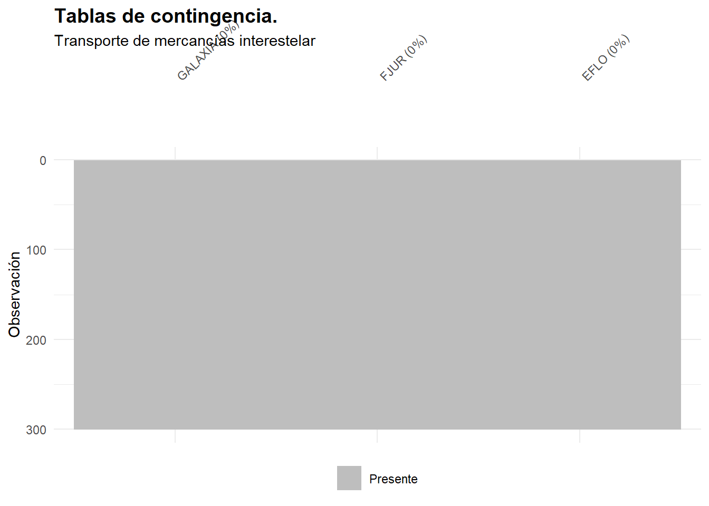
## [1] GALAXIA FJUR EFLO
## <0 rows> (o 0- extensión row.names)
seleccion <- seleccion %>%
filter(!is.na(GALAXIA) &
!is.na(FJUR) &
!is.na(EFLO)) %>%
mutate(GALAXIA = case_match(GALAXIA,
"Gran Nube de Magallanes" ~ "GN Magallanes",
"Pequeña Nube de Magallanes" ~ "PN Magallanes",
"Galaxia de Andrómeda" ~ "Andrómeda",
"Galaxia del Triángulo" ~ "Triángulo",
"Vía Láctea" ~ "Vía Láctea",
.default = GALAXIA))No se ha localizado ninguna observación con missing values, luego no se ha de realizar ningún tipo de tratamiento.
10.2.2 La sospecha institucional (GALAXIA XFJUR).
En el sector del transporte interestelar existe la percepción generalizada de que las condiciones institucionales y regulatorias de cada galaxia influyen en la forma en que las empresas se constituyen jurídicamente. La Vía Láctea, con un marco fiscal estable y maduro, tiende a favorecer sociedades mercantiles de gran tamaño, mientras que otras galaxias, como la Gran y la Pequeña Nube de Magallanes, han desarrollado sistemas legales más flexibles o con incentivos específicos para determinadas estructuras empresariales. Esta heterogeneidad normativa sugiere que la elección de la forma jurídica (FJUR) podría estar condicionada por la galaxia de operación (GALAXIA), lo cual justifica el análisis estadístico de su posible asociación.
Partiendo de esta motivación, la primera fase del estudio se centra en evaluar si la distribución de formas jurídicas difiere significativamente entre galaxias. El objetivo es determinar si los patrones observados responden a diferencias reales en los entornos institucionales o si podrían atribuirse al azar. Para ello, se plantea el contraste de independencia entre FJUR y GALAXIA como un primer ejemplo de análisis de asociación en tablas de contingencia, ofreciendo un caso en el que las diferencias regulatorias justifican plenamente la necesidad de evaluar estadísticamente la relación entre ambas variables.
Para cubrir esta etapa, el primer paso es la construcción de la “tabla
de contingencia” que relacione las variables GALAXIA y FJUR. La
función fundamental es table() que, como sabemos, hace un recuento
de los casos (frecuencias) en los que una variable toma un determinado
valor (o en los que un atributo adopta una determinada categoría o
nivel). Cuando esta función se aplica a más de una variable o atributo,
hace un recuento de los casos que adoptan las posibles combinaciones
entre valores/categorías o niveles de las variables o atributos
implicados. Cuando se trata de dos atributos, por tanto, table()
construye una tabla de contingencia mediante la formulación de una tabla
de doble entrada. En nuestro ejemplo, a la tabla de contingencia la
hemos denominado, por ejemplo, “tab.GA.FJ”. Luego, la hemos presentado
con un formato de tabla elaborado con la función kable() del paquete
knitr, y algunas funciones adicionales del paquete kableExtra:
# TABLA DE CONTINGENCIA GALAXIA FJUR
tab.GA.FJ <- with(seleccion, table(GALAXIA, FJUR))
knitr.table.format = "html"
addmargins(tab.GA.FJ) %>%
kable(format = knitr.table.format,
caption="Empresas TMI") %>%
kable_styling(full_width = F,
bootstrap_options = "striped", "bordered", "condensed",
position = "center",
font_size = 12) %>%
add_header_above(c(GALAXIA = 1, FJUR = 3, " " = 1),
bold=T,
line=T) %>%
row_spec(0, bold= T, align = "c") %>%
column_spec(1, bold = T)| CG | SAG | SLG | Sum | |
|---|---|---|---|---|
| Andrómeda | 20 | 29 | 35 | 84 |
| GN Magallanes | 23 | 12 | 17 | 52 |
| PN Magallanes | 4 | 7 | 22 | 33 |
| Triángulo | 10 | 17 | 20 | 47 |
| Vía Láctea | 25 | 22 | 37 | 84 |
| Sum | 82 | 87 | 131 | 300 |
Es de destacar que, en el código de la tabla, se ha añadido la función
addmargin() para que se añadan las frecuencias marginales de las
categorias de ambos atributos (sumas de filas y columnas). Además, se ha
utilizado la función add_header_above() del paquete kableExtra
para añadir filas superiores al encabezado, que ocupen distintas
cantidades de columnas.
La tabla de contingencia muestra cómo se distribuyen las formas jurídicas de las empresas (CG, SAG y SLG) en cada galaxia del estudio. Se observa que Andrómeda y Vía Láctea son las que concentran el mayor número de compañías (84 cada una), mientras que PN Mag. es la menos representada. En todas las galaxias, la forma jurídica SLG aparece como la más frecuente, aunque con intensidades diferentes: destaca especialmente en PN Mag., donde representa dos tercios de las empresas. Por el contrario, las distribuciones de CG y SAG varían más según galaxia, con valores relativamente altos de CG en GN Mag. y de SAG en Andrómeda. En conjunto, la tabla sugiere posibles diferencias estructurales entre galaxias, lo que motiva la necesidad de un análisis formal de asociación.
La tabla también se puede representar gráficamente mediante la función
mosaic() de la librería {vcd}, con lo que se percibirá mejor la
magnitud de las frecuencias conjuntas (celdas de la tabla). A mayor
frecuencia, mayor área del rectángulo correspondiente:
# Representación gráfica de la tabla con mosaico (paquete vcd)
mosaic(tab.GA.FJ,
main = "Galaxia y Forma Jurídica",
sub = "Empresas TMI",
gp = shading_Marimekko(tab.GA.FJ),
labeling_args = list(rot_labels = c(0, 90),
gp_labels = gpar(fontsize = 10)),
main_gp = gpar(fontsize = 16),
sub_gp = gpar(fontsize = 14))La función mosaic() pertenece al paquete {vcd}, especializado en
visualización de datos categóricos. En este código, tab.GA.FJ es la
tabla de contingencia que se representa, mientras que main y sub
añaden el título y subtítulo del gráfico. El argumento clave es
gp = shading_Marimekko(tab.GA.FJ), que aplica un esquema de sombreado
tipo Marimekko basándose en los valores de la tabla: colores suaves,
bordes limpios y una amplitud de rectángulos proporcional al tamaño de
las frecuencias. De forma alternativa, podrían usarse otros esquemas,
como shading_hcl() (por defecto y muy informativo),
shading_Friendly() (rojo/azul según residuos) o un estilo manual
mediante gpar(fill = …, col = …) si se desea un control cromático
más personalizado.
El argumento labeling_args controla la presentación de las etiquetas:
rot_labels = c(0, 90) rota las correspondientes a GALAXIA para evitar
solapamientos, y gp_labels = gpar(fontsize = 10) especifica un tamaño
de fuente adecuado. Finalmente, main_gp y sub_gp ajustan el tamaño
del título y subtítulo. En conjunto, el código genera un mosaico claro,
bien rotulado y con un sombreado estético basado en la información de la
propia tabla.
En nuestro caso, el resultado es:
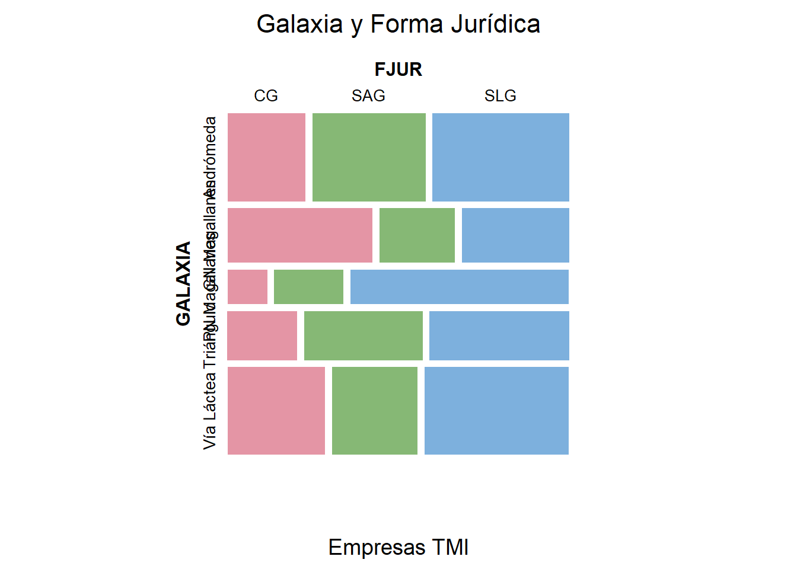
El gráfico de mosaico muestra, mediante el área de cada rectángulo, la distribución conjunta de las empresas según galaxia y forma jurídica. Cada fila corresponde a una galaxia y su anchura refleja el número total de empresas que operan en ella; dentro de cada fila, las columnas representan las formas jurídicas (CG, SAG y SLG) en proporción a su frecuencia dentro de esa galaxia. Puede verse, por ejemplo, que la Vía Láctea y la Gran Nube de Magallanes albergan un mayor número total de empresas, y que en la mayoría de galaxias predominan claramente las SLG, mientras que las CG y SAG ocupan menos espacio relativo. La disposición y tamaño de los rectángulos facilita comparar visualmente cómo varía la composición jurídica entre galaxias, revelando patrones que justifican analizar estadísticamente la posible asociación entre ambas variables.
Otro modo de visualizar la estructura de la tabla es hacer gráficos de
barras que muestren las frecuencias de las categorías de cada factor
(frecuencias marginales). Adicionalmente, en cada barra se pueden
diferenciar los casos o frecuencias que pertenecen a las categorías del
otro factor. En nuestro caso, este código utiliza {ggplot2} para
mostrar las frecuencias marginales de las variables GALAXIA y
FJUR, construyendo un gráfico de barras para cada una. En g1, se
representa el número de empresas por galaxia, apilando las barras según
la forma jurídica gracias al argumento fill = FJUR, lo que permite ver
simultáneamente la distribución total y su composición interna. En g2
se hace lo inverso: se muestran las frecuencias de cada forma jurídica,
apiladas por galaxia mediante fill = GALAXIA. Ambos gráficos incluyen
títulos, ejes claros y etiquetas informativas. Finalmente, la expresión
(g1 + g2) usa {patchwork} para colocar ambos gráficos lado a lado,
y plot_annotation() añade un título general, logrando una presentación
conjunta y coherente de las distribuciones marginales de las dos
variables:
# Representando frecuencias de categorias en factores
g1 <- ggplot(seleccion, mapping= aes(x= GALAXIA, fill = FJUR)) +
geom_bar() +
ggtitle("Galaxia", subtitle = "Empresas TMI") +
ylab("Frecuencias") +
xlab("Galaxia")
g2 <- ggplot(seleccion, mapping= aes(x=FJUR, fill = GALAXIA)) +
geom_bar() +
ggtitle("Forma Jurídica", subtitle = "Empresas TMI") +
ylab("Frecuencias") +
xlab("Forma Jurídica")
(g1 + g2) + plot_annotation(title = "Frecuencias Marginales.",
theme = theme(plot.title = element_text(size = 14)))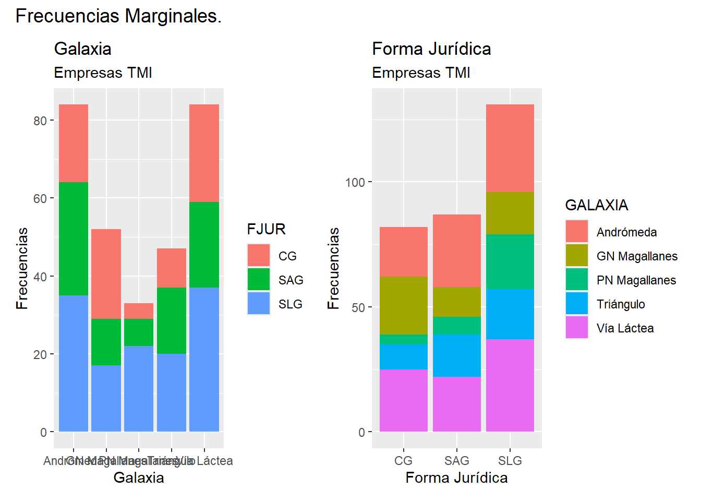
La figura muestra las frecuencias marginales de las dos variables categóricas implicadas en el análisis. En el gráfico de la izquierda se observa cuántas empresas operan en cada galaxia, con las barras apiladas según su forma jurídica. Esto permite ver simultáneamente el tamaño total de cada galaxia en la muestra y cómo se distribuyen en ella las categorías CG, SAG y SLG. Destacan, por ejemplo, Andrómeda y la Vía Láctea como las galaxias con mayor número de empresas, y la clara predominancia de las SLG en todas las galaxias.
En el gráfico de la derecha se muestra la distribución inversa: las frecuencias de cada forma jurídica, apiladas según la galaxia de procedencia. Aquí se aprecia que las SLG son la forma jurídica más habitual en el conjunto del sector, y que las galaxias contribuyen en proporciones diferentes a cada forma, lo que refuerza visualmente la idea de posibles diferencias estructurales entre galaxias. En conjunto, ambos gráficos facilitan una primera lectura descriptiva que complementa el análisis de asociación entre las variables.
Como ya hemos dicho, una de las cuestiones más importantes en el análisis de tablas de contingencia es determinar si existe asociación entre ambos atributos o factores (galaxias donde se concentra la actividad de cada emporesa y donde está su sede, y forma jurídica de la empresa), en el sentido de poder plantear que los casos concentrados en ciertas categorías o niveles concretos de una de las variables categóricas o atributos tienden a concentrarse, simultáneamente, en ciertas categorías concretas de la otra variable o atributo; o al revés: que el hecho de que los casos no tiendan a concentrarse en ciertas categorías de una de las variables o atributos está estadísticamente relacionado con que no se concentren en ciertas categorías de la otra variable o atributo.
Existen diferentes pruebas para verificar la posible existencia de asociación entre dos factores. Una de ellas es el contraste o prueba de asociación de Pearson. Este contraste se basa en un estadístico del contraste, que bajo la hipótesis nula de que no existe asociación sigue una distribución Chi/Ji Cuadrado. El estadístico, en realidad, es una medida global de lo distante que está la tabla de contingencia observada (sus frecuencias conjuntas) respecto a la estructura “ideal” que tendría que tener si existiera independencia “total” entre ambos atributos. Así, el estadístico del contraste de la prueba de asociación de Pearson es:
\[ \chi^2 = \sum_{i=1}^{r} \sum_{j=1}^{c} \frac{(n_{ij} - E_{ij})^2}{E_{ij}} \]
donde:
( \(n_{ij}\) ) es la frecuencia observada en la celda ( (i, j) ).
( \(E_{ij}\) ) es la frecuencia esperada en la celda ( (i, j) ), calculada como ( \(E_{ij} = \frac{R_i \cdot C_j}{N}\) ).
( \(R_i\) ) es el total de la fila ( i ).
( \(C_j\) ) es el total de la columna ( j ).
( \(N\) ) es el total general de todas las observaciones.
Los residuos estandarizados ajustados son una medida de la desviación de las frecuencias observadas respecto a las frecuencias teóricas o esperadas (en caso de independencia perfecta entre atributos) en una tabla de contingencia. Se utilizan para identificar celdas que contribuyen significativamente a la asociación entre las variables. La fórmula para calcular los residuos estandarizados es:
\[ r_{ij} = \frac{n_{ij} - E_{ij}}{\sqrt{E_{ij} \left(1 - \frac{R_i}{N}\right) \left(1 - \frac{C_j}{N}\right)}} \]
donde:
- ( \(r_{ij}\) ) es el residuo estandarizado para la celda en la fila ( i ) y la columna ( j ).
El paquete {stats} de R incluye la función chisq.test(), que permite
realizar la prueba de asociación de Pearson para tablas de
contingencia. En este contraste, la hipótesis nula \((H_0)\) establece que
no existe asociación entre las dos variables categóricas, es decir,
que son estadísticamente independientes y que sus frecuencias
conjuntas siguen el patrón esperado bajo independencia. La hipótesis
alternativa \((H_1)\) plantea que sí existe asociación, de modo que la
distribución conjunta difiere significativamente de la esperada. El
siguiente código ejecuta el test y extrae los residuos estandarizados
ajustados, útiles para identificar qué celdas contribuyen más a la
posible asociación detectada:
Prueba_asoc_Pearson <- chisq.test(tab.GA.FJ)
Prueba_asoc_Pearson##
## Pearson's Chi-squared test
##
## data: tab.GA.FJ
## X-squared = 18.209, df = 8, p-value = 0.01971
Residuos_std <- Prueba_asoc_Pearson$stdresEl resultado de la prueba ofrece un estadístico (\(\chi^2\) = 18.209) con 8 grados de libertad y un p-valor de 0.0197, inferior al nivel habitual de significación del 5%. Esto implica que rechazamos la hipótesis nula de independencia entre GALAXIA y FJUR. En consecuencia, concluimos que sí existe evidencia estadística de asociación entre la galaxia donde se sitúa la sede y opera principalmente la empresa y su forma jurídica.
Precisamente, el paquete {vcd} incluye la función assoc(), que
permite visualizar los residuos estandarizados (o ajustados) de
Pearson de una tabla de contingencia, destacando así qué combinaciones
de categorías contribuyen más o menos a la asociación entre variables.
Para cada celda, el gráfico muestra la diferencia entre la frecuencia
observada y la esperada bajo independencia; las celdas con residuos
estadísticamente significativos (a un nivel del 5%) pueden resaltarse
mediante un esquema de colores personalizado. Para ello, utilizamos la
función custom_shading(), definida previamente, que se aplica mediante
el argumento gp= para asignar a cada barra un color en función de su
residuo.
assoc(tab.GA.FJ,
main = "Galaxia y Forma Jurídica",
sub = "Residuos de Pearson Tipificados. Naranja: significativos con sig. = 0.05",
compress = FALSE,
gp = gpar(fill = custom_shading(Residuos_std)),
labeling_args = list(rot_labels = c(0, 90),
gp_labels = gpar(fontsize = 10)),
main_gp = gpar(fontsize = 16),
sub_gp = gpar(fontsize = 14))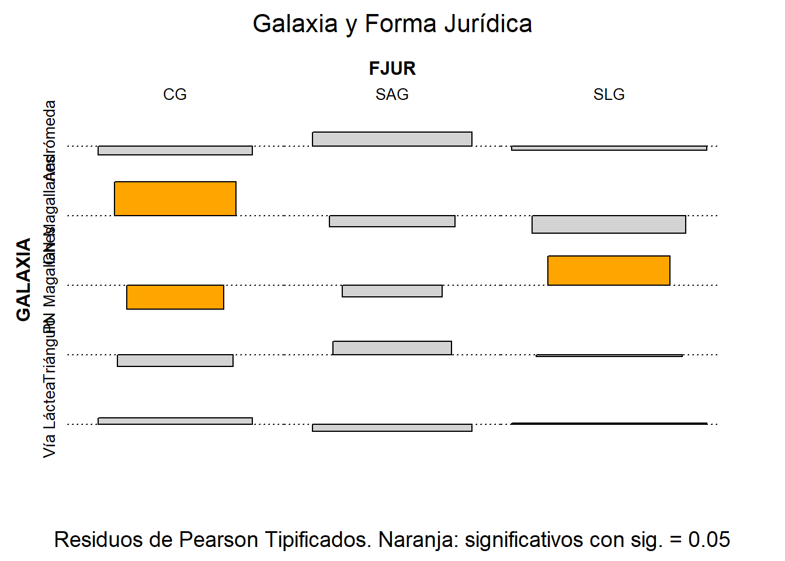
En esta llamada a assoc(), tab.GA.FJ es la tabla cuya asociación se
representa, mientras que main y sub añaden título y subtítulo
explicativos. El argumento compress = FALSE evita reducir visualmente
el ancho de las barras, manteniendo su proporción original. El argumento
clave gp = gpar(fill = custom_shading(Residuos_std)) asigna un color a
cada celda en función del residuo ajustado: tonos naranjas para
residuos significativos y grises para los no significativos.
Finalmente, labeling_args controla la rotación y tamaño de las
etiquetas, y main_gp y sub_gp ajustan el tamaño de letra del título
y subtítulo para una presentación más clara.
El gráfico de residuos estandarizados muestra qué combinaciones Galaxia × Forma Jurídica se desvían significativamente de lo esperado bajo independencia. Las barras coloreadas en naranja indican celdas con residuos estadísticamente significativos: es decir, combinaciones donde la frecuencia observada es mayor o menor de lo que cabría esperar si galaxia y forma jurídica fueran completamente independientes. En este caso, solo unas pocas celdas (por ejemplo, CG en la Gran Nube de Magallanes, CG en la Pequeña Nube de Magallanes y SLG en la Pequeña Nube de Magallanes) muestran desviaciones significativas.
En conjunto, estos resultados confirman que la distribución de formas jurídicas no es uniforme entre galaxias, tal como apuntaba la prueba de ji-cuadrado. Aunque la mayoría de celdas no presentan desviaciones fuertes, las que sí lo hacen indican que ciertas galaxias albergan un número inusualmente alto o bajo de determinadas formas jurídicas. Esto sugiere que los patrones observados no se deben al azar, sino a diferencias reales en los entornos institucionales, normativos o económicos de cada galaxia, lo que justifica concluir que existe una asociación estadísticamente significativa entre ambas variables.
10.2.3 ¿Se Refleja la estructura jurídica en la renovación de la flota? (FJUR × EFLO).
En la segunda fase de la investigación se examina si el estado de la flota de las empresas (EFLO) —renovada, madura o antigua— presenta alguna relación sistemática con su forma jurídica (FJUR). Aunque las estructuras legales pueden variar entre empresas, el mantenimiento y renovación de las flotas suele estar condicionado por normativas técnicas y ciclos de actualización comunes en todo el sector del transporte interestelar. Por ello, resulta razonable plantear que el estado de la flota no dependa de la forma jurídica de la empresa, sino de factores operativos y tecnológicos homogéneos.
Las pruebas de independencia realizadas confirman esta hipótesis: no se detecta asociación significativa entre EFLO y FJUR, lo que indica que las diferencias observadas en el estado de las flotas no pueden atribuirse al tipo de organización jurídica. De este modo, la segunda fase ofrece un ejemplo claro de ausencia de relación entre variables categóricas y sirve como contrapunto a la Fase 1, preparando el terreno para analizar conjuntamente las tres variables mediante modelos log-lineales en la fase final.
A efectos de código, es aplicable todo el script de la fase 1, con el único cambio de aplicarlo a una nueva tabla de contingencia que recoja a las variables categóricas JUR y EFLO. Por ello, vamos a obviarlo, mostrando aquí los principales resultados.
1. Tabla de contingencia
| ANTIGUA | MADURA | RENOVADA | Sum | |
|---|---|---|---|---|
| CG | 34 | 28 | 20 | 82 |
| SAG | 42 | 26 | 19 | 87 |
| SLG | 72 | 36 | 23 | 131 |
| Sum | 148 | 90 | 62 | 300 |
La tabla de contingencia de la Fase 2 muestra cómo se distribuye el estado de la flota (EFLO) entre las distintas formas jurídicas (FJUR). A primera vista, las diferencias entre categorías son relativamente proporcionales: tanto CG como SAG y SLG presentan una mayor concentración de empresas con flotas antiguas, seguidas de maduras y, en menor medida, renovadas. Aunque las SLG muestran valores absolutos más altos debido a su mayor presencia total, la proporción interna entre estados de flota es muy similar a la observada en CG y SAG. Este patrón paralelo entre filas sugiere que el estado de la flota no depende de la forma jurídica, anticipando un escenario de independencia entre ambas variables.
2. Visualización en mosaico de la tabla.
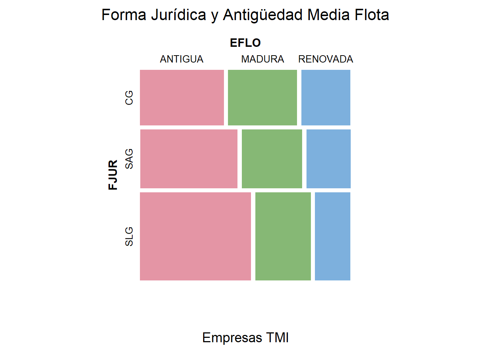
El mosaico representa la distribución conjunta entre forma jurídica y estado de la flota, mostrando mediante el área de cada rectángulo la frecuencia relativa de cada combinación. Se aprecia que, dentro de cada forma jurídica, los patrones son muy similares: predominan las flotas antiguas, seguidas de las maduras y, en menor proporción, las renovadas. La estructura de las barras es prácticamente paralela en CG, SAG y SLG, lo que indica que la composición de estados de flota apenas varía entre tipos de empresa. Visualmente, este gráfico refuerza la idea de que no existe una relación clara entre FJUR y EFLO, anticipando un escenario de independencia entre ambas variables.
3. Frecuencias marginales.
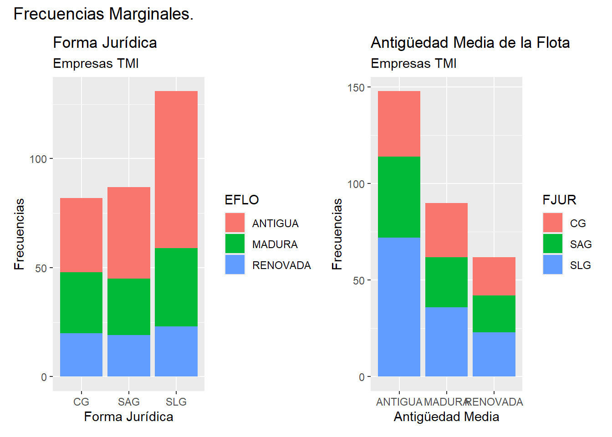
Los gráficos de barras muestran las frecuencias marginales de forma jurídica y del estado de la flota, permitiendo observar cómo se distribuyen ambas variables por separado. En el panel izquierdo, se aprecia que las SLG son claramente la forma jurídica más frecuente, seguidas de SAG y CG, y que en cada una de ellas predominan las flotas antiguas, con patrones muy parecidos entre categorías. En el panel derecho, la variable EFLO revela una estructura similar: las flotas antiguas son las más numerosas en el conjunto del sector, mientras que las renovadas son las menos habituales, independientemente de la forma jurídica. En conjunto, ambos gráficos refuerzan visualmente la idea de que los perfiles de antigüedad de la flota se mantienen estables entre tipos de empresa, lo que coincide con el patrón esperado de independencia entre EFLO y FJUR.
4. Prueba de asociación ji-cuadrado de Pearson.
##
## Pearson's Chi-squared test
##
## data: tab.FJ.EF
## X-squared = 3.8587, df = 4, p-value = 0.4255El contraste ji-cuadrado de Pearson arroja un estadístico de \(χ^2\) = 3.8587 con 4 grados de libertad y un p-valor de 0.4255, muy superior al nivel de significación habitual del 5%. Esto implica que no podemos rechazar la hipótesis nula de independencia entre la forma jurídica de las empresas (FJUR) y el estado de su flota (EFLO). En otras palabras, las diferencias observadas en la tabla de contingencia pueden explicarse por el azar, y no existe evidencia estadística de que ciertos tipos de empresa presenten flotas más antiguas, maduras o renovadas en mayor proporción que otros.
5. Gráfico de asociación (residuos ajustados).
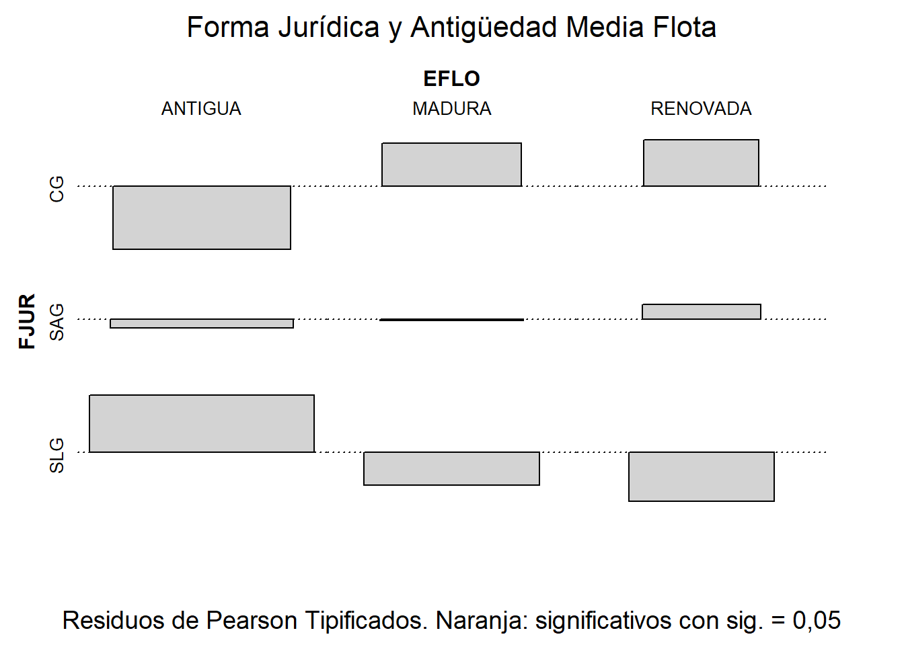
El gráfico de asociación muestra los residuos estandarizados ajustados de cada combinación entre forma jurídica y estado de la flota. Todas las barras aparecen en gris, lo que indica que ningún residuo es estadísticamente significativo al nivel del 5%. En términos prácticos, esto significa que las frecuencias observadas en cada celda no se desvían de manera relevante de las que se esperarían si ambas variables fueran independientes. Así, el gráfico confirma visualmente lo obtenido en la prueba ji-cuadrado: no existe un patrón sistemático que vincule la forma jurídica de las empresas con la antigüedad media de sus flotas, reforzando la conclusión de que ambas variables son independientes.
10.3 Modelos logaritmico-lineales aplicados a tablas de contingencia.
Cuando se trabaja en la verificación de la existencia de asociación entre variables categóricas, atributos o factores, hemos de tener en cuenta la posibilidad de que estos sean más de dos. En este caso multifactorial, no son aplicables las técnicas exploradas anteriormente, pensadas para el caso bifactorial (simple).
Una posibilidad que se nos ofrece es la aplicación de modelos logarítmico-lineales (log-lineales) a tablas de contingencia multifactoriales, que es lo que se tratará en este apartado.
Los modelos log-lineales aplicados a tablas de contingencia parten de la condición de independencia entre factores. Supongamos el caso simple, con una tabla de contingencia de dos factores o atributos, A y B. Bajo la hipótesis de independencia (absoluta o teórica) entre los factores, tendremos que cada frecuencia absoluta conjunta de la tabla se obtiene como:
\[ n_{ij} = \frac{R_i \cdot C_j}{N} = N \cdot \frac{R_i}{N} \cdot \frac{C_j}{N} \] con:
- ( \(n_{ij}\) ) es la frecuencia conjunta para la categoría o fila ( i ) del atributo o factor A, y la categoría o columna ( j ) del atributo o factor B).
- ( \(R_i\) ) es el total de la fila ( i ) del atributo o factor A.
- ( \(C_j\) ) es el total de la columna ( j ) del atributo o factor B.
Tomando logaritmos:
\[ \ln{n_{ij}} = ln{N} \ + ln{\frac{R_i}{N}} + ln{\frac{C_j}{N}} \]
Y renombrando los términos:
\[ \ln{n_{ij}} = \lambda + \lambda^A_i + \lambda^B_j \]
Si no existe independencia entre ambas variables o factores, tendremos:
\[ \ln{n_{ij}} = \lambda + \lambda^A_i + \lambda^B_j + \lambda^{AB}_{ij} \]
Los términos \(\lambda^A_i\) y \(\lambda^B_j\) se denominan efectos directos o principales, mientras que el término \(\lambda^{AB}_{ij}\) es el efecto conjunto o interacción entre los dos atributos o factores. Bajo la hipótesis de independencia entre los dos factores, ese efecto tomaría valor 0.
Si el modelo planteado solo tiene en la especificación los efectos directos, se dirá que es el modelo de independencia. Si se plantean todas las interacciones posibles entre los factores, se hablará del modelo saturado. El modelo saturado otorga un ajuste perfecto; pero es poco útil a la hora de extraer conclusiones relevantes. Se requiere un modelo que, aunque no ajuste al 100% las frecuencias, recoja solo los efectos más importantes.
Si algunos de los efectos más importantes (es decir, significativos en términos estadísticos) son conjuntos (interacciones), podremos concluir que existe asociación entre los factores del modelo (al menos, entre los que existan interacciones importantes, en el caso de más de dos factores). Si no es así, y el modelo que mejor representa la realidad es el de independencia, diremos que los factores son independientes unos de otros, y que no existe asociación (significativa) entre ellos.
Los modelos han de respetar siempre la regla de la jerarquía en su especificación: solo se podrá plantear en el modelo una interacción entre los atributos A y B si se han especificado los efectos directos de A y de B. O se podrá plantear una interacción conjunta entre los factores A, B y C si se han planteado también las interacciones entre A y B, B y C, y A y C.
Los modelos log-lineales se estiman por el método de máxima-verosimilitud.
La estrategia a seguir para estudiar la asociación entre factores será plantear diferentes especificaciones, y comprobar si son aptas para representar bien la realidad (tabla de contingencia). Eso se consigue mediante pruebas que evalúan la magnitud de los residuos, entendidos como la diferencia entre las frecuencias conjuntas realmente observadas, y las frecuencias estimadas por el modelo estimado. Las dos pruebas más comunes son la del ratio de verosimilitud, y la de Pearson.
Si existen varios modelos que, desde el punto de vista de las pruebas anteriores, son aptos para representar razonablemente la realidad, se elegirá el mejor de ellos mediante algún criterio específico, como puede ser aquel que minimice el Criterio de Información de Akaike, que penaliza, para una capacidad de explicación semejante, al modelo con una estructura más compleja (más términos).
Los parámetros estimados finalmente, correspondientes a la mejor especificación, informarán si los efectos directos e interacciones o efectos conjuntos entre los distintos factores del modelo final tienen una influencia positiva o negativa sobre el valor de las diferentes frecuencias conjuntas de la tabla de contingencia, lo que informará no solo de si existe asociación entre factores o no; sino también de, en caso de existir, de cómo se materializa tal asociación.
10.3.1 La complejidad del sistema de relaciones (GALAXIA X FJUR X EFLO).
En la Fase 3 se planteaba la necesidad de comprender de forma integrada cómo interactúan las tres dimensiones clave del sector: la galaxia en la que operan las empresas, su forma jurídica y el estado de su flota. Aunque en las fases anteriores analizamos las relaciones entre cada par de variables por separado, esta visión bivariante es limitada, ya que ignora que los patrones observados pueden depender simultáneamente de un tercer factor. La pregunta central de esta fase es, por tanto, si existe alguna estructura conjunta que explique cómo se distribuyen las empresas cuando se consideran simultáneamente estas tres características.
Los modelos log-lineales ofrecen una herramienta especialmente adecuada para este objetivo, porque permiten analizar de forma conjunta las dependencias e independencias entre varios factores categóricos. A través de ellos es posible identificar cuáles de las relaciones bivariantes son realmente fundamentales, cuáles desaparecen al controlar por otras variables, y si es necesario incluir interacciones de orden superior. En otras palabras, un modelo log-lineal nos ayuda a distinguir entre asociaciones aparentes —producto de efectos indirectos— y asociaciones genuinas entre los factores.
Al ajustar y comparar diferentes modelos log-lineales, podemos determinar si, por ejemplo, la asociación detectada entre GALAXIA y FJUR se mantiene una vez que controlamos por EFLO, o si el estado de la flota influye únicamente a través de la forma jurídica. Esta aproximación conjunta permite construir una imagen más completa del sistema: identificar las dependencias esenciales, descartando las espurias, y establecer qué estructura de relaciones resume mejor el comportamiento de las empresas en este escenario intergaláctico.
Vamos a trabajar de nuevo en el proyecto de la sección anterior, “contingencia”. En la carpeta de este proyecto hemos de guardar estos dos elementos:
archivo de Microsoft® Excel® “interestelar_300.xlsx”. Si abrimos este último archivo, comprobaremos que se compone de tres hojas. La primera muestra un mensaje sobre el uso de los datos, la segunda recoge la descripción de las variables consideradas, y la tercera (hoja “Datos”) almacena los datos que debemos importar. Estos datos se corresponden con diferentes variables económicas y financieras de 300 empresas dedicadas a los servicios de transporte interestelar de mercancías.
El script con el código que vamos a ir ejecutando se llama “loglineal_rstars.R”.
Una vez abierto el script en el editor de RStudio, comprobaremos que la primera parte del código está dedicada a la limpieza de la memoria (Environment). Además, se cargan los paquetes que harán falta para ejecutar el código:
#### Modelos log-lineales para Tablas de Contingencia Multidimensionales #######
################################################################################
# Limpiando el Global Environment
rm(list = ls())
# Cargando paquetes
library (readxl)
library (dplyr)
library (ggplot2)
library (gtExtras)
library (visdat)
library (knitr)
library (kableExtra)
library (pander) # Tablas multifactoriales compactas en Rmarkdown
library (vcd) # Visualización tablas de contingencia
library (MASS) # Estimación log-linealesDespués, y previo a estimar los modelos log-lineales, el script incorpora una serie de funciones auxiliares cuyo objetivo es preparar adecuadamente la tabla de contingencia multidimensional, gestionar posibles problemas de estimación y formatear los resultados de forma clara, ordenada y útil para su interpretación. Estas funciones permiten automatizar los pasos clave del análisis: detección de celdas problemáticas, corrección de tablas para garantizar la estimabilidad del modelo, extracción de coeficientes y presentación final de resultados.
La función detect_zeros_any() identifica de manera robusta todas
las celdas con frecuencia cero en una tabla de contingencia de
cualquier número de dimensiones. Esto es importante porque los
modelos log-lineales pueden fallar o producir estimaciones inestables
cuando existen celdas sin observaciones, por lo que conocer su
localización es esencial. Basándose en esta detección,
impute_zeros_with_one() permite reemplazar únicamente los ceros
por un valor mínimo (por defecto, 1), generando una tabla ajustada apta
para la estimación y dejando registrado qué celdas fueron imputadas y
por qué. Este procedimiento no altera celdas con frecuencia positiva y
asegura la viabilidad numérica del modelo.
Por su parte, extraer_coeficientes() toma un modelo log-lineal
ajustado y descompone sus parámetros en una tabla clara, nombrando cada
coeficiente según las combinaciones de niveles que representa. Esto
facilita enormemente la interpretación de modelos con múltiples
interacciones y niveles. Finalmente, la función generar_solucion()
automatiza la fase de reporte: extrae las pruebas de bondad de ajuste,
presenta los coeficientes en tablas bien formateadas con kable, y
produce un mosaico de residuos del modelo para evaluar visualmente su
adecuación. Toda esta información se organiza en una lista almacenada
automáticamente, lo que permite revisar fácilmente los resultados de
cada modelo estimado.
Estas funciones, en conjunto, proporcionan una infraestructura sólida y ordenada para trabajar con modelos log-lineales sobre tablas multidimensionales, reduciendo errores, mejorando la legibilidad de los resultados y facilitando el análisis de las dependencias entre los factores estudiados.
# FUNCIONES
#### Detección de celdas 0 (robusta a k dimensiones)############################
detect_zeros_any <- function(tab) {
idx <- which(tab == 0, arr.ind = TRUE)
# Si no hay ceros, devuelve NULL
if (is.null(idx) ||
(is.matrix(idx) && nrow(idx) == 0) ||
(is.vector(idx) && length(idx) == 0)) {
return(NULL)
}
idx <- as.data.frame(idx)
dn <- dimnames(tab)
dn_names <- names(dn)
if (is.null(dn_names) || any(nchar(dn_names) == 0)) {
dn_names <- paste0("Var", seq_along(dn))
}
# Mapear índices -> etiquetas por dimensión (si hay dimnames)
out_cols <- lapply(seq_along(dn), function(k) {
if (!is.null(dn[[k]])) dn[[k]][ idx[[k]] ] else idx[[k]]
})
names(out_cols) <- dn_names
out <- as.data.frame(out_cols, stringsAsFactors = FALSE)
out$Frecuencia_Original <- 0L
out
}
################################################################################
#### Imputación 0->1 con reporte como atributo (no toca celdas > 0) ############
impute_zeros_with_one <- function(tab, value = 1L) {
zeros_df <- detect_zeros_any(tab)
tab_adj <- tab
tab_adj[tab_adj == 0] <- value
if (!is.null(zeros_df)) {
zeros_df$Frecuencia_Imputada <- value
attr(tab_adj, "zeros_imputados") <- zeros_df
attr(tab_adj, "nota_imputacion") <-
sprintf("Se imputaron %d celdas 0 con valor %d para poder preparar la estimación.",
nrow(zeros_df), value)
} else {
attr(tab_adj, "zeros_imputados") <- NULL
attr(tab_adj, "nota_imputacion") <- "No había celdas con frecuencia 0."
}
tab_adj
}
################################################################################
#### Función para extraer coeficientes y sus nombres de un modelo ##############
extraer_coeficientes <- function(modelo) {
# Extraer los parámetros del modelo
parametros <- modelo$param
# Crear listas para almacenar nombres y valores de coeficientes
coef_names <- c()
coef_values <- c()
# Función para generar nombres de coeficientes
generate_coef_name <- function(levels) {
return(paste(levels, collapse = ":"))
}
# Recorrer los coeficientes y extraer los nombres y valores
for (term in names(parametros)) {
if (term == "(Intercept)") {
coef_names <- c(coef_names, "T. Independiente")
coef_values <- c(coef_values, parametros[[term]])
} else if (is.matrix(parametros[[term]])) {
# Si es una matriz, recorrer filas y columnas
for (i in 1:nrow(parametros[[term]])) {
for (j in 1:ncol(parametros[[term]])) {
coef_names <- c(coef_names,
paste(rownames(parametros[[term]])[i],
colnames(parametros[[term]])[j],
sep = ":"))
coef_values <- c(coef_values, parametros[[term]][i, j])
}
}
} else if (is.array(parametros[[term]])) {
# Si es un array de más de dos dimensiones
dims <- dim(parametros[[term]])
dimnames_list <- dimnames(parametros[[term]])
for (i in seq_len(dims[1])) {
for (j in seq_len(dims[2])) {
for (k in seq_len(dims[3])) {
coef_name <- paste(dimnames_list[[1]][i],
dimnames_list[[2]][j],
dimnames_list[[3]][k],
sep = ":")
coef_names <- c(coef_names, coef_name)
coef_values <- c(coef_values,
parametros[[term]][i, j, k])
}
}
}
} else {
levels <- names(parametros[[term]])
for (level in levels) {
coef_names <- c(coef_names,
generate_coef_name(c(term, level)))
coef_values <- c(coef_values,
parametros[[term]][[level]])
}
}
}
# Verificar la longitud de los vectores antes de crear el data frame
if (length(coef_names) == length(coef_values)) {
tabla_coeficientes <- data.frame(Coefficient = coef_names,
Value = coef_values,
stringsAsFactors = FALSE)
return(tabla_coeficientes)
} else {
stop("Error: Las longitudes de coef_names y coef_values no coinciden.")
}
}
################################################################################
#### Función generar tablas y gráfico a partir de modelo log-lineal ############
generar_solucion <- function(modelo) {
# Extraer la información del modelo
summary_modelo <- summary(modelo)
# Crear una tabla con la información relevante de las pruebas de validez
tabla_informacion <- data.frame(
Statistic = c("Likelihood Ratio", "Pearson"),
X2 = c(summary_modelo$tests[1, "X^2"], summary_modelo$tests[2, "X^2"]),
df = c(summary_modelo$tests[1, "df"], summary_modelo$tests[2, "df"]),
P_value = c(summary_modelo$tests[1, "P(> X^2)"],
summary_modelo$tests[2, "P(> X^2)"]),
stringsAsFactors = FALSE
)
# Formatear la tabla usando kable
independencia_valida_tab <- tabla_informacion %>%
kable(caption ="Validación del modelo",
format = "html",
col.names = c("Prueba", "Estadístico",
"Grados Libertad",
"P-valor")) %>%
kable_styling(full_width = F,
bootstrap_options = c("striped", "bordered", "condensed"),
position = "center",
font_size = 12) %>%
row_spec(0, bold= T, align = "c")
# Extraer los coeficientes del modelo
independencia_df <- extraer_coeficientes(modelo)
# Formatear la tabla de coeficientes usando kable
independencia_coef_tab <- independencia_df %>%
kable(format = "html",
caption ="Coeficientes del modelo",
digits = 3) %>%
kable_styling(full_width = F,
bootstrap_options = c("striped", "bordered", "condensed"),
position = "center",
font_size = 12) %>%
row_spec(0, bold= T, align = "c")
# Crear el gráfico de mosaico con residuos y mostrarlo en pantalla
plot(modelo, panel = mosaic,
main="Residuos del modelo",
residuals_type = c("deviance"),
gp = shading_hcl,
gp_args = list(interpolate = c(0, 1)),
main_gp = gpar(fontsize = 14),
sub_gp = gpar(fontsize = 9),
labeling_args = list(rot_labels = c(0, 45),
gp_labels = gpar(fontsize = 8)))
# Guardar las tablas en una lista
solucion_nombre <- paste0("solucion_", deparse(substitute(modelo)))
solucion_lista <- list(
Informacion = independencia_valida_tab,
Coeficientes = independencia_coef_tab
)
assign(solucion_nombre, solucion_lista, envir = .GlobalEnv)
}
################################################################################En el siguiente bloque de código se procede a importar los datos
originales y seleccionar las variables categóricas que serán
analizadas mediante modelos log-lineales. Primero se utiliza
read_excel() para leer la hoja Datos del archivo
interestelar_300.xlsx, que contiene la información económica y
organizativa de las 300 empresas del sector de transporte interestelar.
A continuación, se convierte el resultado en un data frame estándar y
se asignan los identificadores de empresa como nombres de fila. Después,
mediante dplyr::select(), se crea el objeto seleccion, que conserva
únicamente las tres variables categóricas de interés: GALAXIA,
FJUR y EFLO, las cuales intervendrán en las tablas de
contingencia y en los modelos log-lineales posteriores. Finalmente, la
instrucción gt_plt_summary(seleccion) genera un resumen visual rápido
del contenido de estas variables, permitiendo comprobar de forma
inmediata su estructura y distribución antes de continuar con el
análisis:
# DATOS
## Importando datos
library (readxl)
interestelar_300 <- read_excel("interestelar_300.xlsx", sheet ="Datos")
interestelar_300 <- data.frame(interestelar_300, row.names = 1)
# Seleccionando variables para el analisis.
seleccion <- interestelar_300 %>%
dplyr::select(GALAXIA,
FJUR,
EFLO)
seleccion_df_graph <- gt_plt_summary(seleccion)
seleccion_df_graph| seleccion | ||||||
| 300 rows x 3 cols | ||||||
| Column | Plot Overview | Missing | Mean | Median | SD | |
|---|---|---|---|---|---|---|
GALAXIAGalaxia de Andrómeda, Vía Láctea, Gran Nube de Magallanes, Galaxia del Triángulo and Pequeña Nube de Magallanes |
0.0% | — | — | — | ||
FJURSLG, SAG and CG |
0.0% | — | — | — | ||
EFLOANTIGUA, MADURA and RENOVADA |
0.0% | — | — | — | ||
El resumen visual confirma que el data frame seleccion contiene
exactamente las tres variables categóricas necesarias para el análisis
log-lineal: GALAXIA (5 categorías), FJUR (3 categorías) y
EFLO (3 categorías). Todas ellas aparecen completas, sin valores
perdidos, y el gráfico integrado muestra de forma inmediata la
distribución interna de sus niveles. Este diagnóstico rápido permite
verificar que los datos están correctamente estructurados y preparados
para construir la tabla de contingencia tridimensional y continuar con
la estimación de los modelos.
A continuación, se verifica la calidad de los datos seleccionados y se
preparan las variables categóricas para la construcción de la tabla
multidimensional. En primer lugar, el bloque comienza con una
inspección visual de valores perdidos mediante vis_miss(), que
genera un gráfico claro y directo sobre la presencia o ausencia de
observaciones en cada variable. Dado que los modelos log-lineales
requieren tablas completas, esta comprobación es esencial para
asegurarse de que ninguna celda quedará afectada por missing values.
Acto seguido, se incluye un filtro que permite localizar
explícitamente las filas con NA, lo que facilita revisar posibles
problemas en los datos originales antes de proceder.
Una vez identificados los valores ausentes, se depura el data frame conservando únicamente las filas completas. En el mismo paso, se recodifican los nombres de las categorías de GALAXIA para abreviarlos y facilitar tanto la visualización de las tablas como la interpretación de resultados en gráficos y salidas de modelos. Finalmente, se convierten todas las variables a formato factor, asegurando que R trate correctamente a cada una como un atributo categórico. Este flujo prepara un conjunto de datos consistente, depurado y listo para construir la tabla de contingencia tridimensional y avanzar hacia el ajuste de los modelos log-lineales.
# Localizando missing values.
seleccion %>%
vis_miss() +
labs(title = "Tablas de contingencia.",
subtitle = "Transporte de mercancías interestelar",
y = "Observación",
fill = NULL) +
scale_fill_manual(
values = c("TRUE" = "red", "FALSE" = "grey"),
labels = c("TRUE" = "NA", "FALSE" = "Presente")) +
theme(
plot.title = element_text(face = "bold", size = 14))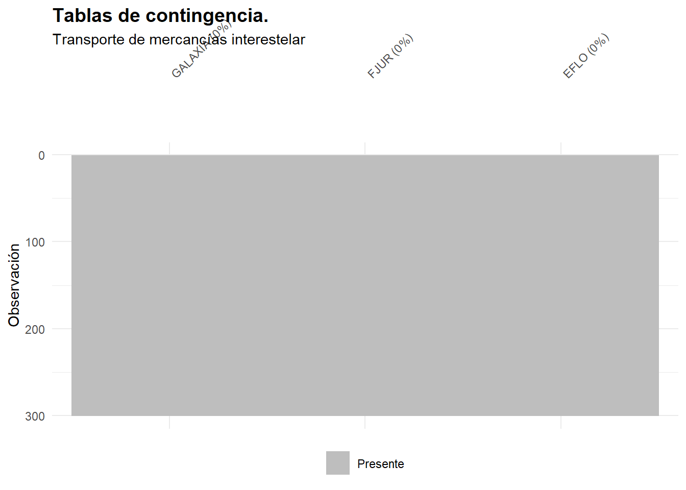
seleccion %>% filter(is.na(GALAXIA) |
is.na(FJUR) |
is.na(EFLO))%>%
dplyr::select(GALAXIA,
FJUR,
EFLO)## [1] GALAXIA FJUR EFLO
## <0 rows> (o 0- extensión row.names)
seleccion <- seleccion %>%
filter(!is.na(GALAXIA) &
!is.na(FJUR) &
!is.na(EFLO)) %>%
mutate(GALAXIA = case_match(GALAXIA,
"Gran Nube de Magallanes" ~ "GN Magallanes",
"Pequeña Nube de Magallanes" ~ "PN Magallanes",
"Galaxia de Andrómeda" ~ "Andrómeda",
"Galaxia del Triángulo" ~ "Triángulo",
"Vía Láctea" ~ "Vía Láctea",
.default = GALAXIA))
# Pasar variables categóricas a factores
seleccion <- seleccion %>% mutate(across(everything(), as.factor))Una vez preparadas las variables categóricas, el siguiente paso consiste
en construir la tabla de contingencia tridimensional que servirá
como base de los modelos log-lineales. Para ello se utiliza xtabs(),
que permite crear la tabla combinando simultáneamente los niveles de
GALAXIA, FJUR y EFLO. Esta tabla representa todas las
frecuencias conjuntas del sistema y constituye el “objeto” que los
modelos analizarán para identificar patrones de dependencia entre los
factores.
Antes de estimar cualquier modelo, es fundamental comprobar si la tabla
contiene celdas con frecuencia cero, ya que los log-lineales pueden
presentar problemas de convergencia o estimaciones inestables cuando
algunas combinaciones de categorías no están representadas en la
muestra. Por ello se aplica la función detect_zeros_any(), diseñada
para localizar ceros en tablas de cualquier dimensión. Si existen, se
muestran en una tabla formateada con kable para documentar qué
combinaciones están ausentes.
El flujo continúa con la función impute_zeros_with_one(), que
reemplaza únicamente las celdas con frecuencia cero por un valor mínimo
(1). Este ajuste no modifica las frecuencias positivas y garantiza que
la tabla resultante sea estimable por los métodos log-lineales.
Además, la función añade como atributos una nota de imputación y un
registro detallado de las celdas modificadas, los cuales se imprimen
después para asegurar trazabilidad y transparencia en el análisis. Con
esta tabla corregida —tab_use— queda listo el material de datos
adecuado y consistente para estimar los modelos log-lineales que se
estudiarán en las siguientes secciones.
# Construir tabla original
tab0 <- xtabs(~ GALAXIA + FJUR + EFLO, data = seleccion)
# Reportar celdas 0 (si existen)
zeros_report <- detect_zeros_any(tab0)
if (is.null(zeros_report)) {
message("No se han detectado celdas con frecuencia 0 en la tabla original.")
} else {
knitr.table.format <- "html"
zeros_report %>%
kable(format = knitr.table.format,
caption = "Combinaciones con 0 detectadas (antes de imputar)") %>%
kable_styling(full_width = FALSE,
bootstrap_options = c("striped","bordered","condensed"),
position = "center", font_size = 12) %>%
row_spec(0, bold = TRUE, align = "c")
}
# Imputar 0 -> 1 (solo celdas con 0) y anotar nota + reporte como atributo
tab_use <- impute_zeros_with_one(tab0, value = 1L)
# Mostrar nota de imputación y, si aplica, el detalle de celdas imputadas
cat("\nNOTA IMPUTACIÓN: ", attr(tab_use, "nota_imputacion"), "\n")
if (!is.null(attr(tab_use, "zeros_imputados"))) {
attr(tab_use, "zeros_imputados") %>%
kable(format = "html",
caption = "Combinaciones imputadas (0 → 1) para estimar modelo") %>%
kable_styling(full_width = FALSE,
bootstrap_options = c("striped","bordered","condensed"),
position = "center", font_size = 12) %>%
row_spec(0, bold = TRUE, align = "c")
}| GALAXIA | FJUR | EFLO | Frecuencia_Original |
|---|---|---|---|
| PN Magallanes | CG | RENOVADA | 0 |
##
## NOTA IMPUTACIÓN: Se imputaron 1 celdas 0 con valor 1 para poder preparar la estimación.| GALAXIA | FJUR | EFLO | Frecuencia_Original | Frecuencia_Imputada |
|---|---|---|---|---|
| PN Magallanes | CG | RENOVADA | 0 | 1 |
En nuestro caso, solo se ha detectado una combinación de categorías o niveles de los factores con 0 observaciones; la correspondiente a GALAXIA = “Pequeña Nube de Magallanes”, FJUR = “CG” (cooperativa) y EFLO = “RENOVADA”. A esta combinación se le imputa una frecuencia “ficticia” con el fin de que el modelo sea estimable, que es la única diferencia que tendrá la tabla “tab_use” con respecto a la tabla original, “tab0”. Huelga decir que en la estimación será “tab_use” la tabla utilizada como base.
Para inspeccionar la estructura de la tabla de contingencia, se utiliza
pander(), ya que permite mostrar tablas multidimensionales en un
formato compacto y legible, similar a ftable() pero con un acabado
más limpio para documentos HTML o R Markdown. A diferencia de imprimir
directamente tab0 en la consola —donde el resultado suele ser denso y
difícil de leer en tablas de más de dos dimensiones— pander() produce
una presentación ordenada, con sangrías y alineaciones que facilitan la
interpretación de las combinaciones de niveles. Además, ofrece distintos
estilos (como "simple", "grid", "pandoc" o "rmarkdown") que
permiten adaptar la salida al formato final del documento. En este caso,
el estilo "rmarkdown" garantiza una integración perfecta en informes
HTML o PDF, manteniendo claridad y coherencia visual.
La función mosaic() del paquete vcd complementa la inspección
numérica mediante una representación gráfica de la tabla. Cada
rectángulo del mosaico refleja la frecuencia de una combinación de
categorías, permitiendo detectar visualmente patrones de asociación
entre los factores. El argumento gp = shading_Marimekko(tab0) aplica
un sombreado que ayuda a distinguir áreas proporcionales a los valores
observados, mientras que labeling_args controla la orientación y el
tamaño de las etiquetas para mejorar la legibilidad en tablas complejas.
Los argumentos main_gp y sub_gp ajustan el tamaño de los títulos
principal y secundario, de modo que el gráfico sea claro y equilibrado.
En conjunto, esta visualización facilita identificar relaciones
estructurales antes de pasar al ajuste de los modelos log-lineales.
# Mostrar tabla
pander("Tabla de contingencia GALAXIA × FJUR × EFLO")Tabla de contingencia GALAXIA × FJUR × EFLO
pander(tab0, style= "rmarkdown")| EFLO | ANTIGUA | MADURA | RENOVADA | ||
| GALAXIA | FJUR | ||||
| Andrómeda | CG | 7 | 7 | 6 | |
| SAG | 12 | 11 | 6 | ||
| SLG | 23 | 8 | 4 | ||
| GN Magallanes | CG | 7 | 7 | 9 | |
| SAG | 5 | 4 | 3 | ||
| SLG | 7 | 6 | 4 | ||
| PN Magallanes | CG | 1 | 3 | 0 | |
| SAG | 4 | 1 | 2 | ||
| SLG | 11 | 8 | 3 | ||
| Triángulo | CG | 4 | 5 | 1 | |
| SAG | 8 | 4 | 5 | ||
| SLG | 8 | 7 | 5 | ||
| Vía Láctea | CG | 15 | 6 | 4 | |
| SAG | 13 | 6 | 3 | ||
| SLG | 23 | 7 | 7 |
pander("Tabla de contingencia GALAXIA × FJUR × EFLO (imputación puntual 0→1)")Tabla de contingencia GALAXIA × FJUR × EFLO (imputación puntual 0→1)
pander(tab_use, style= "rmarkdown")| EFLO | ANTIGUA | MADURA | RENOVADA | ||
| GALAXIA | FJUR | ||||
| Andrómeda | CG | 7 | 7 | 6 | |
| SAG | 12 | 11 | 6 | ||
| SLG | 23 | 8 | 4 | ||
| GN Magallanes | CG | 7 | 7 | 9 | |
| SAG | 5 | 4 | 3 | ||
| SLG | 7 | 6 | 4 | ||
| PN Magallanes | CG | 1 | 3 | 1 | |
| SAG | 4 | 1 | 2 | ||
| SLG | 11 | 8 | 3 | ||
| Triángulo | CG | 4 | 5 | 1 | |
| SAG | 8 | 4 | 5 | ||
| SLG | 8 | 7 | 5 | ||
| Vía Láctea | CG | 15 | 6 | 4 | |
| SAG | 13 | 6 | 3 | ||
| SLG | 23 | 7 | 7 |
# Representación gráfica de la tabla con mosaico
mosaic(tab0,
main = "Galaxia, Forma Jurídica y Antigüedad media de la flota",
sub = "Empresas TMI",
gp = shading_Marimekko(tab0),
labeling_args = list(rot_labels = c(0, 45),
gp_labels = gpar(fontsize = 8)),
main_gp = gpar(fontsize = 16),
sub_gp = gpar(fontsize = 14))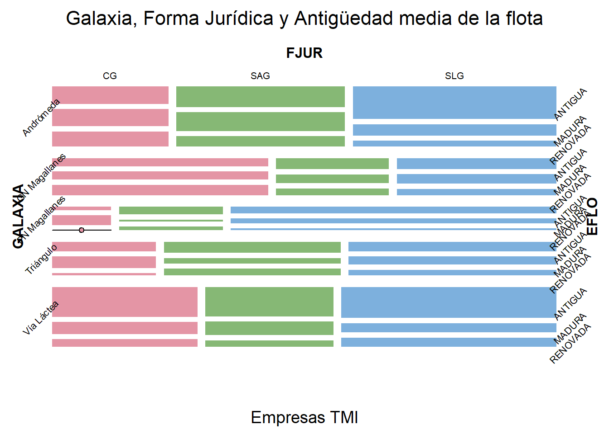
La tabla tab0 muestra la distribución tridimensional original de las
empresas según galaxia, forma jurídica y antigüedad media de
la flota. En ella se aprecia que algunas combinaciones presentan
frecuencias muy bajas, e incluso una con frecuencia cero (PN Mag. – CG –
Renovada), lo que impide ajustar correctamente un modelo log-lineal
saturado o con interacciones relevantes. Para solventarlo, la tabla
tab_use sustituye únicamente los ceros por 1, garantizando que todas
las combinaciones estén representadas y que la estimación sea
numéricamente estable sin alterar la estructura general de la tabla. La
diferencia entre ambas tablas es mínima y localizada: todas las celdas
con valores positivos permanecen iguales, y únicamente las combinaciones
ausentes reciben este ajuste puntual.
El mosaico asociado a tab0 refuerza visualmente la interpretación de
la tabla. En él se observa que la variable EFLO genera las mayores
diferencias en tamaño de los rectángulos, reflejando que las flotas
antiguas y maduras son más frecuentes que las renovadas.
También se aprecian patrones claros por galaxia: Andrómeda y Vía Láctea
muestran bloques grandes y regulares, mientras que PN Magallanes
presenta porciones pequeñas y estrechas, consecuencia de su bajo número
de empresas. Las formas jurídicas también muestran diferencias
destacables: las SLG tienden a concentrar más empresas en casi todas
las galaxias, lo que se visualiza en rectángulos más anchos dentro de su
columna. En conjunto, la tabla y el mosaico permiten ver que la
distribución está lejos de ser uniforme, que existen dependencias
estructurales entre los factores y que la tabla imputada respeta
fielmente estos patrones, manteniendo la información necesaria para el
análisis log-lineal posterior.
Los modelos log-lineales se estiman con la función loglm() del
paquete MASS. Para evitar conflictos de nombres de funciones con
otros paquetes (por ejemplo, select() de dplyr), llamaremos
siempre a la función como MASS::loglm(). La estructura básica es
loglm(formula, data = tabla), donde formula describe el patrón de
dependencias que queremos imponer y data es la tabla de contingencia
multidimensional (en nuestro caso, tab_use).
En la fórmula, los nombres de las variables (GALAXIA, EFLO, FJUR)
representan efectos principales, y los símbolos : y * se
utilizan para las interacciones. Así, el modelo de independencia
total se escribe como ~ GALAXIA + EFLO + FJUR (solo efectos
principales, sin asociaciones entre factores). El modelo saturado,
que reproduce exactamente todas las frecuencias observadas, se
escribiría como ~ GALAXIA * EFLO * FJUR, lo que equivale a incluir
todos los efectos principales, todas las interacciones de segundo orden
y la interacción de tercer orden. Entre estos extremos se sitúan los
modelos intermedios, en los que se incluyen solo algunas
interacciones, por ejemplo ~ GALAXIA * FJUR + EFLO (asociación
GALAXIA–FJUR, pero EFLO independiente) o
~ GALAXIA * FJUR + GALAXIA * EFLO + FJUR * EFLO (todas las
interacciones dos a dos, pero sin interacción triple).
Cuando se estima un modelo con loglm(), el resultado es un objeto que
contiene mucha información: pruebas de ajuste (deviance y
ji-cuadrado de Pearson), frecuencias ajustadas, parámetros
estimados, etc.
Parte de esta información (en especial, los coeficientes) se almacena en estructuras internas algo complejas, especialmente cuando el modelo incluye varias interacciones. Para simplificar su uso, hemos definido dos funciones auxiliares, que se detallaron al comienzo del script:
La función
extraer_coeficientes()toma un objeto devuelto porloglm()y construye un data frame con el nombre de cada coeficiente y su valor estimado, independientemente de que el parámetro proceda de un efecto principal o de una interacción de orden superior.La función
generar_solucion()automatiza la presentación de resultados: a partir de un modelo log-lineal, extrae las pruebas de ajuste (ratio de verosimilitud y Pearson), construye una tabla resumen con sus estadísticos, grados de libertad y p-valores, genera otra tabla con los coeficientes (llamando internamente aextraer_coeficientes()), y produce un gráfico de mosaico de residuos (frecuencias observadas frente a las estimadas por el modelo). Todo ello se devuelve en una lista de objetos listos para ser incluidos en el informe.
Con estas herramientas, estimar y resumir un modelo log-lineal se reduce
a una llamada muy sencilla. Comenzamos por el modelo de
independencia, que asume que la distribución conjunta de las
frecuencias puede explicarse únicamente por los efectos propios de cada
factor, sin interacción entre ellos (es decir, sin asociación entre
GALAXIA, EFLO y FJUR). El siguiente código ajusta este modelo a la tabla
tab_use y genera automáticamente las tablas y el mosaico de residuos
correspondientes:
# Modelo de independencia (solo efectos principales, sin interacciones)
modelo_indep <- MASS::loglm(~ GALAXIA + EFLO + FJUR,
data = tab_use)
generar_solucion(modelo_indep)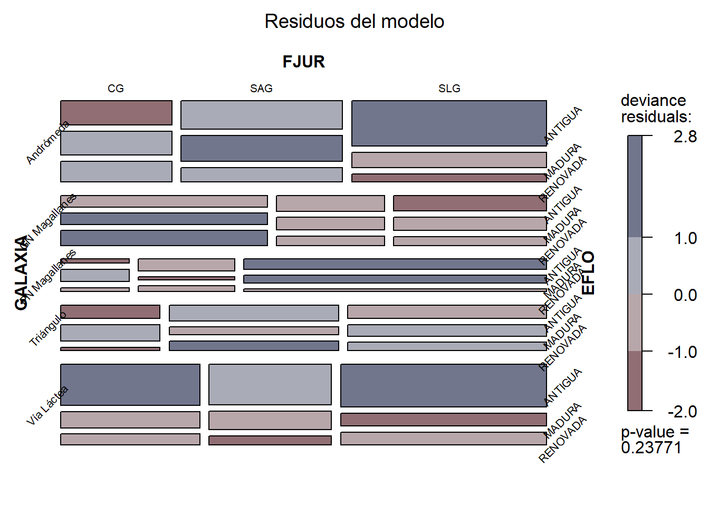
A partir del modelo de independencia podemos evaluar si la hipótesis de
no asociación global entre GALAXIA, FJUR y EFLO resulta razonable o
si, por el contrario, los datos sugieren la presencia de dependencias
entre los factores. Tras la estimación, la función generar_solucion()
crea automáticamente la lista solucion_modelo_indep, que contiene
tanto las tablas con las pruebas de ajuste y los coeficientes como el
mosaico de residuos del modelo. Este gráfico constituye una
herramienta visual clave para diagnosticar la adecuación del modelo, ya
que compara las frecuencias observadas con las estimadas bajo la
suposición de independencia.
El mosaico colorea cada celda según el signo y magnitud del residuo de desviancia: los tonos azulados indican que el modelo ha subestimado la frecuencia observada (hay más casos reales de los que el modelo espera), mientras que los tonos rojizos reflejan sobreestimación (el modelo espera más casos de los que realmente se observan). Cuanto más intenso es el color, mayor es la discrepancia entre observaciones y predicciones, y, por tanto, peor el ajuste en esa combinación de niveles.
En este caso, el gráfico muestra varias celdas con colores claramente intensos, tanto azules como rojizos, lo que señala que el modelo de independencia no es capaz de reproducir adecuadamente la estructura de la tabla. En particular, se observan discrepancias sistemáticas por galaxias y por formas jurídicas, así como diferencias notables entre tipos de flota, indicando que las variables no actúan de manera independiente. El patrón visual es consistente con la idea de que existen asociaciones reales entre algunos de los factores, asociaciones que el modelo de independencia no incorpora. Estos resultados sugieren, por tanto, que será necesario considerar modelos más complejos (incluyendo interacciones) para captar la estructura conjunta de la distribución de las empresas intergalácticas.
Para interpretar el ajuste global del modelo de independencia, podemos acceder al primer elemento de la lista solucion_modelo_indep, que contiene las pruebas de validez del modelo (ratio de verosimilitud y chi-cuadrado de Pearson), mediante:
solucion_modelo_indep$Informacion| Prueba | Estadístico | Grados Libertad | P-valor |
|---|---|---|---|
| Likelihood Ratio | 41.66967 | 36 | 0.2377067 |
| Pearson | 44.11617 | 36 | 0.1659980 |
La tabla resultante resume el contraste entre las frecuencias observadas y las que predice el modelo bajo la hipótesis de independencia entre los tres factores. En ambos casos, los p-valores son superiores a 0,05, lo que indica que no se rechaza la hipótesis de independencia global al nivel habitual de significación. En otras palabras, según estas pruebas, el modelo de independencia no presenta un ajuste estadísticamente deficiente.
Sin embargo, esta conclusión debe matizarse a la luz del mosaico de residuos: aunque el desajuste global no resulte significativo, el gráfico revela discrepancias importantes en combinaciones concretas de categorías. Esto sugiere que, aun cuando el modelo de independencia no sea rechazado formalmente, existen patrones de asociación local relevantes que justifican avanzar hacia modelos con interacciones.
Por último, vamos a mostrar el segundo elemento de la lista “solucion_modelo_indep”, que es la tabla donde se disponen los parámetros o coeficientes estimados del modelo, que en este caso corresponden solo a efectos directos o principales. Para obtener la tabla ejecutaremos:
solucion_modelo_indep$Coeficientes| Coefficient | Value |
|---|---|
| T. Independiente | 1.757 |
| GALAXIA:Andrómeda | 0.393 |
| GALAXIA:GN Magallanes | -0.087 |
| GALAXIA:PN Magallanes | -0.512 |
| GALAXIA:Triángulo | -0.188 |
| GALAXIA:Vía Láctea | 0.393 |
| FJUR:CG | -0.168 |
| FJUR:SAG | -0.121 |
| FJUR:SLG | 0.289 |
| EFLO:ANTIGUA | 0.450 |
| EFLO:MADURA | -0.047 |
| EFLO:RENOVADA | -0.404 |
La tabla de coeficientes estimados por el modelo de independencia
muestra un parámetro o coeficiente para cada nivel de cada factor, ya
que la función loglm() utiliza una parametrización con restricción
de suma cero. El modelo ajustado tiene la forma
\[ \log(\hat{n}_{ijk}) = \lambda + \lambda_i^{(\text{GALAXIA})} + \lambda_j^{(\text{FJUR})} + \lambda_k^{(\text{EFLO})} \]
de manera que cada frecuencia esperada es
\[ \hat{n}_{ijk} = \exp\Big( \lambda + \lambda_i^{(\text{GALAXIA})} + \lambda_j^{(\text{FJUR})} + \lambda_k^{(\text{EFLO})} \Big) \]
A modo ilustrativo, calculemos dos frecuencias esperadas concretas: una correspondiente a una celda cuyo residuo es pequeño (lo que sugiere un buen ajuste) y otra donde el residuo es grande en valor absoluto. Hay que tener en cuenta, que se calcularán dos tipos de residuos: el residuo de la deviancia, y el residuo de Pearson, cuyas diferencias son:
| Característica | Residuo de Pearson | Residuo de la deviancia |
|---|---|---|
| Definición | \(r^{(P)}_{ij} = \dfrac{n_{ij} - \hat{n}_{ij}}{\sqrt{\hat{n}_{ij}}}\) | \(r^{(dev)}_{ij} = \text{sign}(n_{ij} - \hat{n}_{ij}) \sqrt{2\Big[n_{ij}\ln\!\big(\tfrac{n_{ij}}{\hat{n}_{ij}}\big) - (n_{ij}-\hat{n}_{ij})\Big]}\) |
| Base teórica | Aproximación normal sobre la diferencia observado–esperado | Derivado de la deviancia (razón de verosimilitudes del modelo Poisson) |
| Qué mide | Desviación estandarizada de \(O_{ij}\) respecto a \(\hat{\mu}_{ij}\) | Contribución de cada celda a la deviancia (mal ajuste) del modelo |
| Signo | Positivo si el modelo subestima; negativo si sobreestima | Igual: signo dado por \(\text{sign}(O_{ij}-\hat{\mu}_{ij})\) |
| Interpretación práctica | Valores grandes en valor absoluto indican celdas mal ajustadas | Igual, pero coherente con el criterio de ajuste por deviancia |
| Ventaja principal | Cálculo simple, fórmula muy intuitiva | Más fiel al modelo log-lineal y más fiable con frecuencias bajas |
| Uso típico en log-lineales | Diagnóstico básico y comparaciones rápidas | Residuo por defecto en mosaicos y diagnósticos detallados de ajuste del modelo |
1. Celda con residuo pequeño: (Triángulo, SAG, MADURA):
Según la tabla tab_use, la frecuencia observada es:
\[ n_{ijk} = 4 \]
Los coeficientes relevantes son:
- \((\lambda = 1.757)\)
- \((\lambda_{\text{Triángulo}}^{(\text{GALAXIA})} = -0.188)\)
- \((\lambda_{\text{SAG}}^{(\text{FJUR})} = -0.121)\)
- \((\lambda_{\text{MADURA}}^{(\text{EFLO})} = -0.047)\)
Por tanto,
\[ \log(\hat{n}) = 1.757 - 0.188 - 0.121 - 0.047 = 1.401 \] \[ \hat{n} = \exp(1.401) = 4.06 \] El residuo de desviancia del modelo es:
\[ r^{(dev)} = \text{sign}(n-\hat{n}) \sqrt{2\left[n\log\left(\frac{n}{\hat{n}}\right) - (n-\hat{n}) \right]} \] Sustituyendo valores:
\[ r^{(dev)} \approx \text{sign}(4 - 4.06)\sqrt{2\left[4\log\left(\frac{4}{4.06}\right)-(4-4.06)\right]} \approx -0.08 \] Lo que confirma el buen ajuste en esta combinación.
Por otro lado, el residuo ajustado de Pearson se obtiene como:
\[ r^{(P)} = \frac{n - \hat{n}}{\sqrt{\hat{n}}} = \frac{4 - 4.06}{\sqrt{4.06}} = -0.03 \]
2. Celda con residuo grande: (PN Mag., SLG, ANTIGUA):
En la tabla tab_use la frecuencia observada es:
\[ n_{ijk} = 11 \] Los coeficientes correspondientes son:
- \((\lambda = 1.757)\)
- \((\lambda_{\text{PN Mag.}}^{(\text{GALAXIA})} = -0.512)\)
- \((\lambda_{\text{SLG}}^{(\text{FJUR})} = 0.289)\)
- \((\lambda_{\text{ANTIGUA}}^{(\text{EFLO})} = 0.450)\)
Por tanto,
\[ \log(\hat{n}) = 1.757 - 0.512 + 0.289 + 0.450 = 1.984 \] \[ \hat{\mu} = \exp(1.984) = 7.28 \] El residuo de desviancia es:
\[ r^{(dev)} \approx \text{sign}(11 - 7.28) \sqrt{2\left[ 11\log\left(\frac{11}{7.28}\right) - (11 - 7.28) \right]} \approx 2.48 \] Lo anterior indica un desajuste notable, coherente con la intensidad del color en el mosaico.
Por su lado, el residuo de Pearson correspondiente es:
\[ r^{(P)} = \frac{11 - 7.28}{\sqrt{7.28}} = 1.38 \]
Este residuo confirma la existencia de una discrepancia apreciable entre el modelo de independencia y los datos en esta combinación de niveles.
La interpretación económica de los coeficientes del modelo de independencia se basa en el hecho de que cada parámetro refleja la tendencia relativa de cada nivel del factor a aparecer con mayor o menor frecuencia en la tabla conjunta, manteniendo constantes los demás factores. Dado que el modelo es aditivo en escala logarítmica, un coeficiente positivo indica que ese nivel aparece más a menudo de lo que cabría esperar en promedio, mientras que un coeficiente negativo indica el efecto contrario: menor presencia relativa. Por ejemplo, las galaxias Andrómeda y Vía Láctea presentan coeficientes positivos, lo que sugiere que, en términos agregados, concentran más empresas de lo que predeciría una distribución totalmente homogénea, mientras que PN Mag. presenta un coeficiente claramente negativo, coherente con su menor número de compañías en la muestra.
Algo similar ocurre con las formas jurídicas. El coeficiente positivo de las SLG indica que, independientemente de la galaxia y del estado de la flota, este tipo de empresa aparece con mayor frecuencia relativa en la tabla, lo que puede interpretarse como una preferencia estructural del sector por esta forma organizativa. En cambio, las SAG muestran un coeficiente negativo, reflejando una presencia comparativamente menor. Estos efectos no implican causalidad, pero sí proporcionan una primera lectura de los patrones organizativos dominantes en el sector del transporte interestelar.
En cuanto al estado de la flota (EFLO), el parámetro positivo de ANTIGUA indica que las flotas antiguas aparecen con mayor frecuencia relativa que las flotas maduras o renovadas, cuyos coeficientes son negativos. Esto es coherente con la estructura de datos y puede interpretarse como una señal de que una proporción significativa de estas empresas opera con flotas envejecidas, posiblemente reflejando restricciones presupuestarias, ciclos largos de renovación o una baja necesidad de actualización tecnológica en determinados itinerarios o galaxias.
En conjunto, aunque el modelo de independencia no considera interacciones, estos coeficientes ofrecen una primera visión de los patrones globales de presencia relativa de cada categoría en el conjunto del sector.
Pasamos ahora al modelo saturado, en el cual se especifican todos los efectos directos o principales de los factores, y todas las interacciones posibles entre dichos factores (interacciones dos a dos, y la interacción entre los tres factores de modo simultáneo). Este modelo, en la práctica, no es relevante porque, aunque explica al 100% las frecuencias observadas, no indica cuál de los niveles de los factores o atributos y sus interacciones son los más importantes (modelo redundante).
Para su estimación, simplemente se sustituyen los signos “+” del modelo anterior por los signos “*”. El modelo se denominará “modelo_sat”:
# Modelo Saturado.
modelo_sat <- MASS::loglm(~ GALAXIA * EFLO * FJUR,
data= tab_use)
generar_solucion(modelo_sat)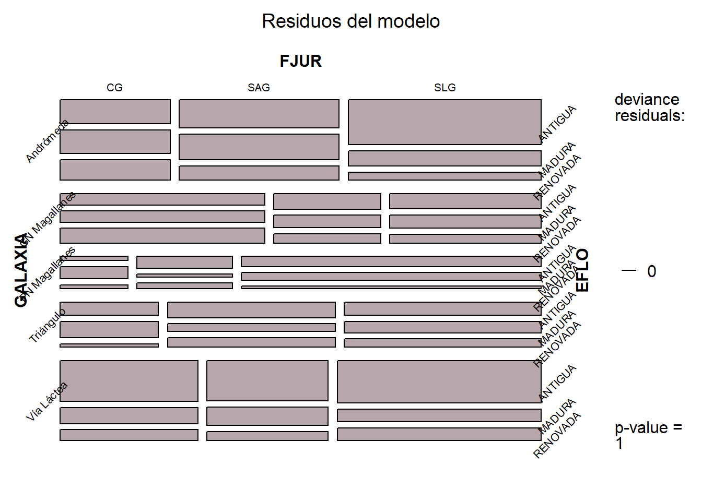
El gráfico de mosaico muestra que, obviamente, todos los residuos son 0, ya que coinciden las frecuencias observadas y las estimadas por el modelo. En cuanto a la tabla de validación:
solucion_modelo_sat$Informacion| Prueba | Estadístico | Grados Libertad | P-valor |
|---|---|---|---|
| Likelihood Ratio | 0 | 0 | 1 |
| Pearson | 0 | 0 | 1 |
En ambas pruebas el p-valor es 1, dado que no se rechaza la hipótesis de que el modelo representa adecuadamente la realidad (de hecho, la representa perfectamente). Pero, como hemos dicho, desde el punto de vista del análisis estructural, el modelo saturado no es muy útil, ya que no distingue entre los efectos e interacciones relevantes y los que son poco importantes. Por último, mostraremos la tabla con los coeficientes estimados, correspondientes tanto a los efectos principales o directos como a las interacciones:
solucion_modelo_sat$Coeficientes| Coefficient | Value |
|---|---|
| T. Independiente | 1.669 |
| GALAXIA:Andrómeda | 0.438 |
| GALAXIA:GN Magallanes | 0.032 |
| GALAXIA:PN Magallanes | -0.696 |
| GALAXIA:Triángulo | -0.146 |
| GALAXIA:Vía Láctea | 0.372 |
| FJUR:CG | -0.219 |
| FJUR:SAG | -0.110 |
| FJUR:SLG | 0.329 |
| EFLO:ANTIGUA | 0.385 |
| EFLO:MADURA | 0.011 |
| EFLO:RENOVADA | -0.396 |
| Andrómeda:CG | 0.007 |
| Andrómeda:SAG | 0.228 |
| Andrómeda:SLG | -0.235 |
| GN Magallanes:CG | 0.547 |
| GN Magallanes:SAG | -0.226 |
| GN Magallanes:SLG | -0.322 |
| PN Magallanes:CG | -0.388 |
| PN Magallanes:SAG | -0.169 |
| PN Magallanes:SLG | 0.557 |
| Triángulo:CG | -0.306 |
| Triángulo:SAG | 0.279 |
| Triángulo:SLG | 0.027 |
| Vía Láctea:CG | 0.140 |
| Vía Láctea:SAG | -0.112 |
| Vía Láctea:SLG | -0.027 |
| Andrómeda:ANTIGUA | 0.031 |
| Andrómeda:MADURA | 0.024 |
| Andrómeda:RENOVADA | -0.054 |
| GN Magallanes:ANTIGUA | -0.252 |
| GN Magallanes:MADURA | -0.004 |
| GN Magallanes:RENOVADA | 0.256 |
| PN Magallanes:ANTIGUA | -0.096 |
| PN Magallanes:MADURA | 0.076 |
| PN Magallanes:RENOVADA | 0.020 |
| Triángulo:ANTIGUA | -0.059 |
| Triángulo:MADURA | 0.113 |
| Triángulo:RENOVADA | -0.054 |
| Vía Láctea:ANTIGUA | 0.377 |
| Vía Láctea:MADURA | -0.209 |
| Vía Láctea:RENOVADA | -0.168 |
| CG:ANTIGUA | -0.238 |
| CG:MADURA | 0.217 |
| CG:RENOVADA | 0.021 |
| SAG:ANTIGUA | 0.082 |
| SAG:MADURA | -0.177 |
| SAG:RENOVADA | 0.096 |
| SLG:ANTIGUA | 0.156 |
| SLG:MADURA | -0.040 |
| SLG:RENOVADA | -0.116 |
| Andrómeda:CG:ANTIGUA | -0.126 |
| Andrómeda:CG:MADURA | -0.200 |
| Andrómeda:CG:RENOVADA | 0.326 |
| Andrómeda:SAG:ANTIGUA | -0.237 |
| Andrómeda:SAG:MADURA | 0.316 |
| Andrómeda:SAG:RENOVADA | -0.079 |
| Andrómeda:SLG:ANTIGUA | 0.363 |
| Andrómeda:SLG:MADURA | -0.115 |
| Andrómeda:SLG:RENOVADA | -0.248 |
| GN Magallanes:CG:ANTIGUA | 0.021 |
| GN Magallanes:CG:MADURA | -0.308 |
| GN Magallanes:CG:RENOVADA | 0.287 |
| GN Magallanes:SAG:ANTIGUA | 0.030 |
| GN Magallanes:SAG:MADURA | 0.191 |
| GN Magallanes:SAG:RENOVADA | -0.222 |
| GN Magallanes:SLG:ANTIGUA | -0.051 |
| GN Magallanes:SLG:MADURA | 0.117 |
| GN Magallanes:SLG:RENOVADA | -0.065 |
| PN Magallanes:CG:ANTIGUA | -0.417 |
| PN Magallanes:CG:MADURA | 0.429 |
| PN Magallanes:CG:RENOVADA | -0.012 |
| PN Magallanes:SAG:ANTIGUA | 0.323 |
| PN Magallanes:SAG:MADURA | -0.603 |
| PN Magallanes:SAG:RENOVADA | 0.280 |
| PN Magallanes:SLG:ANTIGUA | 0.094 |
| PN Magallanes:SLG:MADURA | 0.174 |
| PN Magallanes:SLG:RENOVADA | -0.268 |
| Triángulo:CG:ANTIGUA | 0.300 |
| Triángulo:CG:MADURA | 0.269 |
| Triángulo:CG:RENOVADA | -0.569 |
| Triángulo:SAG:ANTIGUA | -0.019 |
| Triángulo:SAG:MADURA | -0.253 |
| Triángulo:SAG:RENOVADA | 0.272 |
| Triángulo:SLG:ANTIGUA | -0.281 |
| Triángulo:SLG:MADURA | -0.017 |
| Triángulo:SLG:RENOVADA | 0.297 |
| Vía Láctea:CG:ANTIGUA | 0.222 |
| Vía Láctea:CG:MADURA | -0.190 |
| Vía Láctea:CG:RENOVADA | -0.032 |
| Vía Láctea:SAG:ANTIGUA | -0.097 |
| Vía Láctea:SAG:MADURA | 0.348 |
| Vía Láctea:SAG:RENOVADA | -0.251 |
| Vía Láctea:SLG:ANTIGUA | -0.125 |
| Vía Láctea:SLG:MADURA | -0.159 |
| Vía Láctea:SLG:RENOVADA | 0.284 |
La estimación del modelo saturado permite aplicar algoritmos para la
obtención de la especificación de un modelo que, sin llegar a ser el
saturado, asegure una representación valida de la realidad obviando
los efectos e interacciones que no sean estadísticamente relevantes.
Por ejemplo, la función step() aplica el procedimiento automático de
selección de modelos basado en el criterio de información de Akaike
(AIC), buscando especificaciones que mantengan un buen ajuste con la
mayor parsimonia posible. En este caso, partimos del modelo saturado
(modelo_sat) y, con direction = "backward", el algoritmo va
eliminando iterativamente los términos (interacciones o efectos) que
produzcan una mayor reducción del AIC, lo que indica un equilibrio más
eficiente entre ajuste y complejidad.
El argumento scale = 0 es el adecuado para modelos log-lineales (asume
dispersión fija), trace = 1 muestra en pantalla cada paso del proceso
para monitorizar cómo evoluciona el AIC y qué términos se eliminan, y
steps = 1000 garantiza que no haya limitaciones en el número máximo de
iteraciones, permitiendo explorar completamente el espacio de modelos.
El resultado final, almacenado como modelo_def, es la especificación
óptima según el AIC, más simple que el modelo saturado pero
suficientemente expresiva para captar los patrones esenciales de
asociación entre los factores:
# Elección del modelo final.
modelo_def <- step(modelo_sat, scale = 0,
direction = c("backward"),
trace = 1, steps = 1000)## Start: AIC=90
## ~GALAXIA * EFLO * FJUR
##
## Df AIC
## - GALAXIA:EFLO:FJUR 16 69.505
## <none> 90.000
##
## Step: AIC=69.5
## ~GALAXIA + EFLO + FJUR + GALAXIA:EFLO + GALAXIA:FJUR + EFLO:FJUR
##
## Df AIC
## - GALAXIA:EFLO 8 63.126
## - EFLO:FJUR 4 65.200
## - GALAXIA:FJUR 8 69.277
## <none> 69.505
##
## Step: AIC=63.13
## ~GALAXIA + EFLO + FJUR + GALAXIA:FJUR + EFLO:FJUR
##
## Df AIC
## - EFLO:FJUR 4 59.359
## <none> 63.126
## - GALAXIA:FJUR 8 63.436
##
## Step: AIC=59.36
## ~GALAXIA + EFLO + FJUR + GALAXIA:FJUR
##
## Df AIC
## <none> 59.359
## - GALAXIA:FJUR 8 59.670
## - EFLO 2 92.219En nuestro ejemplo, la especificación del modelo definitivo incluye los tres efectos directos o principales de los factores o atributos, y la interacción entre los factores de la forma jurídica (FJUR) y la Galaxia donde opera principalmente y tiene la sede la empresa (GALAXIA). El algoritmo no ha evaluado como importantes las interacciones de la antigüedad de la flota (EFLO) con los otros dos factores, ni las interacciones triples entre los tres factores.
Luego, se pasa el modelo a la función generar_solución() para obtener
los resultados (el gráfico de mosaico y las dos tablas). El gráfico
obtenido es:
generar_solucion(modelo_def)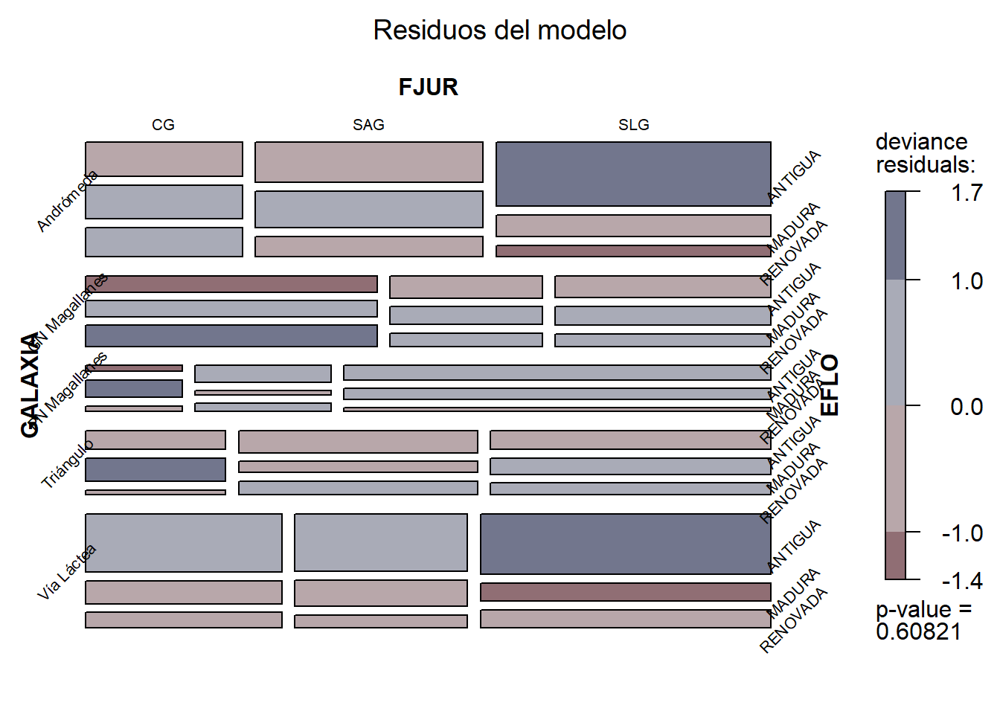
El gráfico de residuos del modelo seleccionado muestra un ajuste considerablemente mejor que el del modelo de independencia. La mayoría de los rectángulos presentan tonalidades suaves, señal de que las diferencias entre las frecuencias observadas y las estimadas por el modelo son pequeñas. Ello indica que incluir la interacción GALAXIA × FJUR, junto con los efectos principales de los tres factores, permite capturar adecuadamente las pautas de asociación más relevantes presentes en los datos. En términos prácticos, el modelo reconoce que la forma jurídica de las empresas depende parcialmente de la galaxia en la que operan, pero que la antigüedad media de la flota no modifica de forma sustantiva este patrón.
Los residuos más intensos, aunque moderados, se concentran en combinaciones puntuales en las que algunas galaxias presentan una ligera sobre- o infra-representación de determinadas formas jurídicas o estados de flota, pero ningún patrón sistemático importante queda sin explicar. Esto confirma que las interacciones con EFLO no aportan mejora significativa al modelo, y que la relación clave en la estructura del sector está en el vínculo entre dónde opera la empresa (galaxia) y cómo está formalmente constituida (forma jurídica). En conjunto, el modelo final proporciona una representación parsimoniosa y estadísticamente coherente de las dependencias esenciales entre los factores analizados.
En cuanto a la tabla de validación:
solucion_modelo_def$Informacion| Prueba | Estadístico | Grados Libertad | P-valor |
|---|---|---|---|
| Likelihood Ratio | 25.35935 | 28 | 0.6082143 |
| Pearson | 25.57311 | 28 | 0.5964967 |
Los resultados de la tabla de validación muestran que ambas pruebas de ajuste global —la razón de verosimilitud (Likelihood Ratio) y la prueba de Pearson— producen p-valores muy elevados (0.608 y 0.596). Esto significa que, bajo la hipótesis nula de que el modelo especificado se ajusta correctamente a los datos, no encontramos evidencia estadística para rechazarla. En otras palabras, las discrepancias entre las frecuencias observadas y las estimadas por el modelo son compatibles con el azar, por lo que el modelo final puede considerarse adecuado y bien ajustado. Dado que el p-valor supera con holgura niveles habituales de significación (0.05 o 0.01), concluimos que no es necesario añadir interacciones adicionales, y que la especificación elegida representa correctamente la estructura de dependencias presente en la tabla de contingencia tridimensional.
En lo que se refiere a los coeficientes estimados del modelo:
solucion_modelo_def$Coeficientes| Coefficient | Value |
|---|---|
| T. Independiente | 1.711 |
| GALAXIA:Andrómeda | 0.435 |
| GALAXIA:GN Magallanes | -0.054 |
| GALAXIA:PN Magallanes | -0.656 |
| GALAXIA:Triángulo | -0.161 |
| GALAXIA:Vía Láctea | 0.436 |
| FJUR:CG | -0.219 |
| FJUR:SAG | -0.127 |
| FJUR:SLG | 0.346 |
| EFLO:ANTIGUA | 0.450 |
| EFLO:MADURA | -0.047 |
| EFLO:RENOVADA | -0.404 |
| Andrómeda:CG | -0.091 |
| Andrómeda:SAG | 0.188 |
| Andrómeda:SLG | -0.097 |
| GN Magallanes:CG | 0.537 |
| GN Magallanes:SAG | -0.206 |
| GN Magallanes:SLG | -0.331 |
| PN Magallanes:CG | -0.387 |
| PN Magallanes:SAG | -0.143 |
| PN Magallanes:SLG | 0.530 |
| Triángulo:CG | -0.189 |
| Triángulo:SAG | 0.250 |
| Triángulo:SLG | -0.061 |
| Vía Láctea:CG | 0.131 |
| Vía Láctea:SAG | -0.089 |
| Vía Láctea:SLG | -0.042 |
La tabla de coeficientes del modelo final refleja, en primer lugar, los efectos directos de cada factor. Entre las galaxias, Andrómeda y Vía Láctea presentan coeficientes claramente positivos, lo que indica que, en promedio, estas regiones concentran un número de empresas mayor del esperado bajo una distribución homogénea. En contraste, PN Mag. muestra un coeficiente muy negativo, coherente con su menor presencia en la muestra. En cuanto a la forma jurídica, las SLG tienen un coeficiente directo positivo, reflejando que este tipo societario aparece con mayor frecuencia global, mientras que CG y SAG presentan coeficientes negativos, indicando una menor presencia relativa. Finalmente, en el factor EFLO, el coeficiente positivo de ANTIGUA muestra que las flotas más envejecidas son más habituales que las maduras o renovadas, un patrón que podría relacionarse con barreras tecnológicas o de inversión.
Las interacciones GALAXIA × FJUR aportan una lectura más matizada y son la clave del modelo seleccionado. Por ejemplo, GN Mag. presenta una interacción muy positiva con CG (+0.537), lo que indica que —más allá de los efectos directos— en esta galaxia las empresas tipo CG aparecen con una frecuencia muy superior a la esperada. Del mismo modo, PN Mag. muestra una interacción muy positiva con SLG (+0.530), sugiriendo que este tipo societario es especialmente dominante en esa región concreta. En cambio, varias combinaciones presentan coeficientes negativos, como Andrómeda:SLG (–0.097) o GN Mag.:SLG (–0.331), lo que indica una menor afinidad entre esas formas jurídicas y dichos entornos galácticos.
La combinación de efectos directos e interacciones permite entender mejor el comportamiento económico del sector. Por ejemplo, aunque las SLG son, en promedio, más frecuentes, su distribución no es homogénea: prosperan especialmente en PN Mag., pero no tanto en Andrómeda o GN Mag.. Por el contrario, aunque CG tiene un efecto directo negativo (menos frecuencia global), sí aparece reforzada en GN Mag., lo que podría deberse a condiciones normativas, institucionales o históricas particulares de esa galaxia.
En conjunto, la tabla de coeficientes muestra que la estructura empresarial del transporte interestelar no se explica únicamente por diferencias generales entre galaxias o características internas de las empresas, sino por patrones específicos de compatibilidad entre formas jurídicas y entornos galácticos. Estas interacciones capturan decisiones estratégicas relevantes: qué forma societaria encaja mejor en cada contexto, cómo influyen los marcos regulatorios locales y qué configuraciones organizativas resultan más estables o rentables en determinadas regiones del universo económico analizado.
10.4  Materiales para realizar las prácticas del capítulo.
Materiales para realizar las prácticas del capítulo.
En esta sección se muestran los links de acceso a los diferentes materiales (scripts, datos…) necesarios para llevar a cabo los contenidos prácticos del capítulo.
Datos (en formato Microsoft (R) Excel (R)):
- interestelar_300.xlsx (obtener aquí)
Scripts:
contingencia_rstars.R (obtener aquí)
loglineal_rstars.R (obtener aquí)